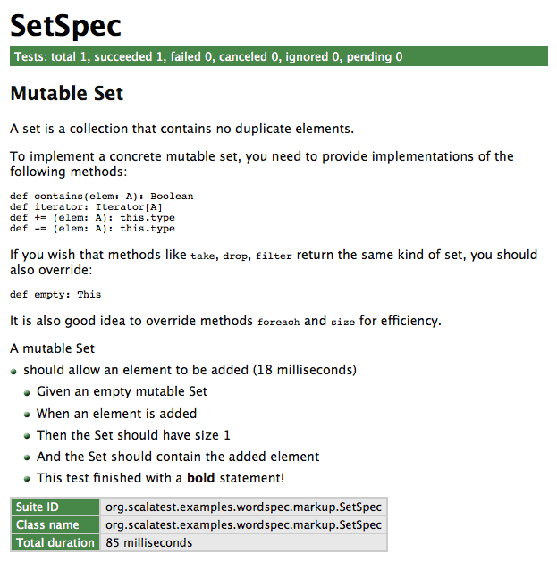

package wordspec
Classes and traits for ScalaTest's WordSpec style.
This package is released as the scalatest-wordspec module.
- Source
- package.scala
Type Members
- class AnyWordSpec extends AnyWordSpecLike
Facilitates a “behavior-driven” style of development (BDD), in which tests are combined with text that specifies the behavior the tests verify.
Facilitates a “behavior-driven” style of development (BDD), in which tests are combined with text that specifies the behavior the tests verify.
Recommended Usage: For teams coming from specs or specs2, AnyWordSpecwill feel familiar, and is often the most natural way to port specsN tests to ScalaTest.AnyWordSpecis very prescriptive in how text must be written, so a good fit for teams who want a high degree of discipline enforced upon their specification text.Class
AnyWordSpecis so named because your specification text is structured by placing words after strings. Here's an exampleAnyWordSpec:package org.scalatest.examples.wordspec
import org.scalatest._
class SetSpec extends wordspec.AnyWordSpec {
"A Set" when { "empty" should { "have size 0" in { assert(Set.empty.size === 0) }
"produce NoSuchElementException when head is invoked" in { assertThrows[NoSuchElementException] { Set.empty.head } } } } }In a
AnyWordSpecyou write a one (or more) sentence specification for each bit of behavior you wish to specify and test. Each specification sentence has a "subject," which is sometimes called the system under test (or SUT). The subject is entity being specified and tested and also serves as the subject of the sentences you write for each test. A subject can be followed by one of three verbs,should,must, orcan, and a block. Here are some examples:"A Stack" should { // ... } "An Account" must { // ... } "A ShippingManifest" can { // ... }
You can describe a subject in varying situations by using a
whenclause. Awhenclause follows the subject and precedes a block. In the block after thewhen, you place strings that describe a situation or a state the subject may be in using a string, each followed by a verb. Here's an example:"A Stack" when { "empty" should { // ... } "non-empty" should { // ... } "full" should { // ... } }
When you are ready to finish a sentence, you write a string followed by
inand a block that contains the code of the test. Here's an example:import org.scalatest._
class StackSpec extends wordspec.AnyWordSpec { "A Stack" when { "empty" should { "be empty" in { // ... } "complain on peek" in { // ... } "complain on pop" in { // ... } } "full" should { "be full" in { // ... } "complain on push" in { // ... } } } }Running the above
StackSpecin the interpreter would yield:scala> org.scalatest.run(new StackSpec) StackSpec: A Stack when empty - should be empty - should complain on peek - should complain on pop when full - should be full - should complain on pushNote that the output does not exactly match the input in an effort to maximize readability. Although the
AnyWordSpeccode is nested, which can help you eliminate any repeated phrases in the specification portion of your code, the output printed moveswhenandshoulddown to the beginning of the next line.Sometimes you may wish to eliminate repeated phrases inside the block following a
verb. Here's an example in which the phrase "provide an and/or operator, which" is repeated:import org.scalatest._
class AndOrSpec extends wordspec.AnyWordSpec {
"The ScalaTest Matchers DSL" should { "provide an and operator, which returns silently when evaluating true and true" in {} "provide an and operator, which throws a TestFailedException when evaluating true and false" in {} "provide an and operator, which throws a TestFailedException when evaluating false and true" in {} "provide an and operator, which throws a TestFailedException when evaluating false and false" in {} "provide an or operator, which returns silently when evaluating true or true" in {} "provide an or operator, which returns silently when evaluating true or false" in {} "provide an or operator, which returns silently when evaluating false or true" in {} "provide an or operator, which throws a TestFailedException when evaluating false or false" in {} } }In such situations you can place
whichclauses inside the verb clause, like this:import org.scalatest._
class AndOrSpec extends wordspec.AnyWordSpec {
"The ScalaTest Matchers DSL" should { "provide an and operator," which { "returns silently when evaluating true and true" in {} "throws a TestFailedException when evaluating true and false" in {} "throws a TestFailedException when evaluating false and true" in {} "throws a TestFailedException when evaluating false and false" in {} } "provide an or operator," which { "returns silently when evaluating true or true" in {} "returns silently when evaluating true or false" in {} "returns silently when evaluating false or true" in {} "throws a TestFailedException when evaluating false or false" in {} } } }Running the above
AndOrSpecin the interpreter would yield:scala> org.scalatest.run(new AndOrSpec) AndOrSpec: The ScalaTest Matchers DSL should provide an and operator, which - returns silently when evaluating true and true - throws a TestFailedException when evaluating true and false - throws a TestFailedException when evaluating false and true - throws a TestFailedException when evaluating false and false should provide an or operator, which - returns silently when evaluating true or true - returns silently when evaluating true or false - returns silently when evaluating false or true - throws a TestFailedException when evaluating false or falseNote that unlike
whenandshould/must/can, awhichappears in the output right where you put it in the input, at the end of the line, to maximize readability.If a word or phrase is repeated at the beginning of each string contained in a block, you can eliminate that repetition by using an after word. An after word is a word or phrase that you can place after
when, a verb, orwhich. For example, in the previousAnyWordSpec, the word "provide" is repeated at the beginning of each string inside theshouldblock. You can factor out this duplication like this:import org.scalatest._
class AndOrSpec extends wordspec.AnyWordSpec {
def provide = afterWord("provide")
"The ScalaTest Matchers DSL" should provide { "an and operator," which { "returns silently when evaluating true and true" in {} "throws a TestFailedException when evaluating true and false" in {} "that throws a TestFailedException when evaluating false and true" in {} "throws a TestFailedException when evaluating false and false" in {} } "an or operator," which { "returns silently when evaluating true or true" in {} "returns silently when evaluating true or false" in {} "returns silently when evaluating false or true" in {} "throws a TestFailedException when evaluating false or false" in {} } } }Running the above version of
AndOrSpecwith theprovideafter word in the interpreter would give you:scala> org.scalatest.run(new AndOrSpec) AndOrSpec: The ScalaTest Matchers DSL should provide an and operator, which - returns silently when evaluating true and true - throws a TestFailedException when evaluating true and false - that throws a TestFailedException when evaluating false and true - throws a TestFailedException when evaluating false and false an or operator, which - returns silently when evaluating true or true - returns silently when evaluating true or false - returns silently when evaluating false or true - throws a TestFailedException when evaluating false or falseOnce you've defined an after word, you can place it after
when, a verb (should,must, orcan), orwhich. (You can't place one afterinoris, the words that introduce a test.) Here's an example that has after words used in all three places:import org.scalatest._
class ScalaTestGUISpec extends wordspec.AnyWordSpec {
def theUser = afterWord("the user") def display = afterWord("display") def is = afterWord("is")
"The ScalaTest GUI" when theUser { "clicks on an event report in the list box" should display { "a blue background in the clicked-on row in the list box" in {} "the details for the event in the details area" in {} "a rerun button," which is { "enabled if the clicked-on event is rerunnable" in {} "disabled if the clicked-on event is not rerunnable" in {} } } } }Running the previous
AnyWordSpecin the Scala interpreter would yield:scala> org.scalatest.run(new ScalaTestGUISpec) ScalaTestGUISpec: The ScalaTest GUI when the user clicks on an event report in the list box should display - a blue background in the clicked-on row in the list box - the details for the event in the details area a rerun button, which is - enabled if the clicked-on event is rerunnable - disabled if the clicked-on event is not rerunnableIn case when you need to use different verb for a same subject, you can use
itortheyshorthand to avoid subject duplication:"A Stack" when { // ... }
it should { // ... }A
AnyWordSpec's lifecycle has two phases: the registration phase and the ready phase. It starts in registration phase and enters ready phase the first timerunis called on it. It then remains in ready phase for the remainder of its lifetime.Tests can only be registered while the
AnyWordSpecis in its registration phase. Any attempt to register a test after theAnyWordSpechas entered its ready phase, i.e., afterrunhas been invoked on theAnyWordSpec, will be met with a thrownTestRegistrationClosedException. The recommended style of usingAnyWordSpecis to register tests during object construction as is done in all the examples shown here. If you keep to the recommended style, you should never see aTestRegistrationClosedException.Note: Class
AnyWordSpecis in part inspired by classorg.specs.Specification, designed by Eric Torreborre for the specs framework.Ignored tests
To support the common use case of temporarily disabling a test, with the good intention of resurrecting the test at a later time,
AnyWordSpecadds a methodignoreto strings that can be used instead ofinto register a test. For example, to temporarily disable the test with the name"A Stack should pop values in last-in-first-out order", just change “in” into “ignore,” like this:package org.scalatest.examples.wordspec.ignore
import org.scalatest._
class SetSpec extends wordspec.AnyWordSpec {
"A Set" when { "empty" should { "have size 0" ignore { assert(Set.empty.size === 0) }
"produce NoSuchElementException when head is invoked" in { assertThrows[NoSuchElementException] { Set.empty.head } } } } }If you run this version of
SetSpecwith:scala> org.scalatest.run(new SetSpec)
It will run only the second test and report that the first test was ignored:
A Set when empty - should have size 0 !!! IGNORED !!! - should should produce NoSuchElementException when head is invoked
If you wish to temporarily ignore an entire suite of tests, you can (on the JVM, not Scala.js) annotate the test class with
@Ignore, like this:package org.scalatest.examples.wordspec.ignoreall
import org.scalatest._
@Ignore class SetSpec extends wordspec.AnyWordSpec {
"A Set" when { "empty" should { "have size 0" in { assert(Set.empty.size === 0) }
"produce NoSuchElementException when head is invoked" in { assertThrows[NoSuchElementException] { Set.empty.head } } } } }When you mark a test class with a tag annotation, ScalaTest will mark each test defined in that class with that tag. Thus, marking the
SetSpecin the above example with the@Ignoretag annotation means that both tests in the class will be ignored. If you run the aboveSetSpecin the Scala interpreter, you'll see:scala> org.scalatest.run(new SetSpec) SetSpec: A Set when empty - should have size 0 !!! IGNORED !!! - should produce NoSuchElementException when head is invoked !!! IGNORED !!!
Note that marking a test class as ignored won't prevent it from being discovered by ScalaTest. Ignored classes will be discovered and run, and all their tests will be reported as ignored. This is intended to keep the ignored class visible, to encourage the developers to eventually fix and “un-ignore” it. If you want to prevent a class from being discovered at all (on the JVM, not Scala.js), use the
DoNotDiscoverannotation instead.Informers
One of the parameters to
AnyWordSpec'srunmethod is aReporter, which will collect and report information about the running suite of tests. Information about suites and tests that were run, whether tests succeeded or failed, and tests that were ignored will be passed to theReporteras the suite runs. Most often the reporting done by default byAnyWordSpec's methods will be sufficient, but occasionally you may wish to provide custom information to theReporterfrom a test. For this purpose, anInformerthat will forward information to the currentReporteris provided via theinfoparameterless method. You can pass the extra information to theInformervia itsapplymethod. TheInformerwill then pass the information to theReportervia anInfoProvidedevent.One use case for the
Informeris to pass more information about a specification to the reporter. For example, theGivenWhenThentrait provides methods that use the implicitinfoprovided byWordSpecto pass such information to the reporter. Here's an example:package org.scalatest.examples.wordspec.info
import collection.mutable import org.scalatest._
class SetSpec extends wordspec.AnyWordSpec with GivenWhenThen {
"A mutable Set" should { "allow an element to be added" in { Given("an empty mutable Set") val set = mutable.Set.empty[String]
When("an element is added") set += "clarity"
Then("the Set should have size 1") assert(set.size === 1)
And("the Set should contain the added element") assert(set.contains("clarity"))
info("That's all folks!") } } }If you run this
AnyWordSpecfrom the interpreter, you will see the following output:scala> org.scalatest.run(new SetSpec) A mutable Set - should allow an element to be added + Given an empty mutable Set + When an element is added + Then the Set should have size 1 + And the Set should contain the added element + That's all folks!Documenters
AnyWordSpecalso provides amarkupmethod that returns aDocumenter, which allows you to send to theReportertext formatted in Markdown syntax. You can pass the extra information to theDocumentervia itsapplymethod. TheDocumenterwill then pass the information to theReportervia anMarkupProvidedevent.Here's an example
AnyWordSpecthat usesmarkup:package org.scalatest.examples.wordspec.markup
import collection.mutable import org.scalatest._
class SetSpec extends wordspec.AnyWordSpec with GivenWhenThen {
markup { """ Mutable Set ———-- A set is a collection that contains no duplicate elements. To implement a concrete mutable set, you need to provide implementations of the following methods: def contains(elem: A): Boolean def iterator: Iterator[A] def += (elem: A): this.type def -= (elem: A): this.type If you wish that methods like `take`, `drop`, `filter` return the same kind of set, you should also override: def empty: This It is also good idea to override methods `foreach` and `size` for efficiency. """ }
"A mutable Set" should { "allow an element to be added" in { Given("an empty mutable Set") val set = mutable.Set.empty[String]
When("an element is added") set += "clarity"
Then("the Set should have size 1") assert(set.size === 1)
And("the Set should contain the added element") assert(set.contains("clarity"))
markup("This test finished with a **bold** statement!") } } }Although all of ScalaTest's built-in reporters will display the markup text in some form, the HTML reporter will format the markup information into HTML. Thus, the main purpose of
markupis to add nicely formatted text to HTML reports. Here's what the aboveSetSpecwould look like in the HTML reporter:
Notifiers and alerters
ScalaTest records text passed to
infoandmarkupduring tests, and sends the recorded text in therecordedEventsfield of test completion events likeTestSucceededandTestFailed. This allows string reporters (like the standard out reporter) to showinfoandmarkuptext after the test name in a color determined by the outcome of the test. For example, if the test fails, string reporters will show theinfoandmarkuptext in red. If a test succeeds, string reporters will show theinfoandmarkuptext in green. While this approach helps the readability of reports, it means that you can't useinfoto get status updates from long running tests.To get immediate (i.e., non-recorded) notifications from tests, you can use
note(aNotifier) andalert(anAlerter). Here's an example showing the differences:package org.scalatest.examples.wordspec.note
import collection.mutable import org.scalatest._
class SetSpec extends wordspec.AnyWordSpec {
"A mutable Set" should { "allow an element to be added" in {
info("info is recorded") markup("markup is *also* recorded") note("notes are sent immediately") alert("alerts are also sent immediately")
val set = mutable.Set.empty[String] set += "clarity" assert(set.size === 1) assert(set.contains("clarity")) } } }Because
noteandalertinformation is sent immediately, it will appear before the test name in string reporters, and its color will be unrelated to the ultimate outcome of the test:notetext will always appear in green,alerttext will always appear in yellow. Here's an example:scala> org.scalatest.run(new SetSpec) SetSpec: A mutable Set + notes are sent immediately + alerts are also sent immediately - should allow an element to be added + info is recorded + markup is *also* recorded
Another example is slowpoke notifications. If you find a test is taking a long time to complete, but you're not sure which test, you can enable slowpoke notifications. ScalaTest will use an
Alerterto fire an event whenever a test has been running longer than a specified amount of time.In summary, use
infoandmarkupfor text that should form part of the specification output. Usenoteandalertto send status notifications. (Because the HTML reporter is intended to produce a readable, printable specification,infoandmarkuptext will appear in the HTML report, butnoteandalerttext will not.)Pending tests
A pending test is one that has been given a name but is not yet implemented. The purpose of pending tests is to facilitate a style of testing in which documentation of behavior is sketched out before tests are written to verify that behavior (and often, before the behavior of the system being tested is itself implemented). Such sketches form a kind of specification of what tests and functionality to implement later.
To support this style of testing, a test can be given a name that specifies one bit of behavior required by the system being tested. The test can also include some code that sends more information about the behavior to the reporter when the tests run. At the end of the test, it can call method
pending, which will cause it to complete abruptly withTestPendingException.Because tests in ScalaTest can be designated as pending with
TestPendingException, both the test name and any information sent to the reporter when running the test can appear in the report of a test run. (In other words, the code of a pending test is executed just like any other test.) However, because the test completes abruptly withTestPendingException, the test will be reported as pending, to indicate the actual test, and possibly the functionality it is intended to test, has not yet been implemented. You can mark tests as pending in aAnyWordSpeclike this:package org.scalatest.examples.wordspec.pending
import org.scalatest._
class SetSpec extends wordspec.AnyWordSpec {
"A Set" when { "empty" should { "have size 0" in (pending)
"produce NoSuchElementException when head is invoked" in { assertThrows[NoSuchElementException] { Set.empty.head } } } } }If you run this version of
SetSpecwith:scala> org.scalatest.run(new SetSpec)
It will run both tests but report that
should have size 0is pending. You'll see:A Set when empty - should have size 0 (pending) - should produce NoSuchElementException when head is invoked
One difference between an ignored test and a pending one is that an ignored test is intended to be used during a significant refactorings of the code under test, when tests break and you don't want to spend the time to fix all of them immediately. You can mark some of those broken tests as ignored temporarily, so that you can focus the red bar on just failing tests you actually want to fix immediately. Later you can go back and fix the ignored tests. In other words, by ignoring some failing tests temporarily, you can more easily notice failed tests that you actually want to fix. By contrast, a pending test is intended to be used before a test and/or the code under test is written. Pending indicates you've decided to write a test for a bit of behavior, but either you haven't written the test yet, or have only written part of it, or perhaps you've written the test but don't want to implement the behavior it tests until after you've implemented a different bit of behavior you realized you need first. Thus ignored tests are designed to facilitate refactoring of existing code whereas pending tests are designed to facilitate the creation of new code.
One other difference between ignored and pending tests is that ignored tests are implemented as a test tag that is excluded by default. Thus an ignored test is never executed. By contrast, a pending test is implemented as a test that throws
TestPendingException(which is what calling thependingmethod does). Thus the body of pending tests are executed up until they throwTestPendingException. The reason for this difference is that it enables your unfinished test to sendInfoProvidedmessages to the reporter before it completes abruptly withTestPendingException, as shown in the previous example onInformers that used theGivenWhenThentrait. For example, the following snippet in aWordSpec:"The Scala language" should { "add correctly" in { Given("two integers") When("they are added") Then("the result is the sum of the two numbers") pending } // ...
Would yield the following output when run in the interpreter:
The Scala language - should add correctly (pending) + Given two integers + When they are added + Then the result is the sum of the two numbers
Tagging tests
A
AnyWordSpec's tests may be classified into groups by tagging them with string names. As with any suite, when executing aAnyWordSpec, groups of tests can optionally be included and/or excluded. To tag aAnyWordSpec's tests, you pass objects that extend classorg.scalatest.Tagto methods that register tests. ClassTagtakes one parameter, a string name. If you have created tag annotation interfaces as described in theTagdocumentation, then you will probably want to use tag names on your test functions that match. To do so, simply pass the fully qualified names of the tag interfaces to theTagconstructor. For example, if you've defined a tag annotation interface with fully qualified name,com.mycompany.tags.DbTest, then you could create a matching tag forAnyWordSpecs like this:package org.scalatest.examples.wordspec.tagging
import org.scalatest.Tag
object DbTest extends Tag("com.mycompany.tags.DbTest")Given these definitions, you could place
AnyWordSpectests into groups with tags like this:import org.scalatest._ import org.scalatest.tagobjects.Slow
class SetSpec extends wordspec.AnyWordSpec {
"A Set" when { "empty" should { "have size 0" taggedAs(Slow) in { assert(Set.empty.size === 0) }
"produce NoSuchElementException when head is invoked" taggedAs(Slow, DbTest) in { assertThrows[NoSuchElementException] { Set.empty.head } } } } }This code marks both tests with the
org.scalatest.tags.Slowtag, and the second test with thecom.mycompany.tags.DbTesttag.The
runmethod takes aFilter, whose constructor takes an optionalSet[String]calledtagsToIncludeand aSet[String]calledtagsToExclude. IftagsToIncludeisNone, all tests will be run except those those belonging to tags listed in thetagsToExcludeSet. IftagsToIncludeis defined, only tests belonging to tags mentioned in thetagsToIncludeset, and not mentioned intagsToExclude, will be run.It is recommended, though not required, that you create a corresponding tag annotation when you create a
Tagobject. A tag annotation (on the JVM, not Scala.js) allows you to tag all the tests of aWordSpecin one stroke by annotating the class. For more information and examples, see the documentation for classTag. On Scala.js, to tag all tests of a suite, you'll need to tag each test individually at the test site.Shared fixtures
A test fixture is composed of the objects and other artifacts (files, sockets, database connections, etc.) tests use to do their work. When multiple tests need to work with the same fixtures, it is important to try and avoid duplicating the fixture code across those tests. The more code duplication you have in your tests, the greater drag the tests will have on refactoring the actual production code.
ScalaTest recommends three techniques to eliminate such code duplication:
- Refactor using Scala
- Override
withFixture - Mix in a before-and-after trait
Each technique is geared towards helping you reduce code duplication without introducing instance
vars, shared mutable objects, or other dependencies between tests. Eliminating shared mutable state across tests will make your test code easier to reason about and more amenable for parallel test execution.The following sections describe these techniques, including explaining the recommended usage for each. But first, here's a table summarizing the options:
Refactor using Scala when different tests need different fixtures. get-fixture methods The extract method refactor helps you create a fresh instances of mutable fixture objects in each test that needs them, but doesn't help you clean them up when you're done. fixture-context objects By placing fixture methods and fields into traits, you can easily give each test just the newly created fixtures it needs by mixing together traits. Use this technique when you need different combinations of mutable fixture objects in different tests, and don't need to clean up after. loan-fixture methods Factor out dupicate code with the loan pattern when different tests need different fixtures that must be cleaned up afterwards. Override withFixturewhen most or all tests need the same fixture.withFixture(NoArgTest)The recommended default approach when most or all tests need the same fixture treatment. This general technique allows you, for example, to perform side effects at the beginning and end of all or most tests, transform the outcome of tests, retry tests, make decisions based on test names, tags, or other test data. Use this technique unless: - Different tests need different fixtures (refactor using Scala instead)
- An exception in fixture code should abort the suite, not fail the test (use a before-and-after trait instead)
- You have objects to pass into tests (override
withFixture(OneArgTest)instead)
withFixture(OneArgTest)Use when you want to pass the same fixture object or objects as a parameter into all or most tests. Mix in a before-and-after trait when you want an aborted suite, not a failed test, if the fixture code fails. BeforeAndAfterUse this boilerplate-buster when you need to perform the same side-effects before and/or after tests, rather than at the beginning or end of tests. BeforeAndAfterEachUse when you want to stack traits that perform the same side-effects before and/or after tests, rather than at the beginning or end of tests. Calling get-fixture methods
If you need to create the same mutable fixture objects in multiple tests, and don't need to clean them up after using them, the simplest approach is to write one or more get-fixture methods. A get-fixture method returns a new instance of a needed fixture object (or an holder object containing multiple fixture objects) each time it is called. You can call a get-fixture method at the beginning of each test that needs the fixture, storing the returned object or objects in local variables. Here's an example:
package org.scalatest.examples.wordspec.getfixture
import org.scalatest._ import collection.mutable.ListBuffer
class ExampleSpec extends wordspec.AnyWordSpec {
class Fixture { val builder = new StringBuilder("ScalaTest is ") val buffer = new ListBuffer[String] }
def fixture = new Fixture
"Testing" should { "be easy" in { val f = fixture f.builder.append("easy!") assert(f.builder.toString === "ScalaTest is easy!") assert(f.buffer.isEmpty) f.buffer += "sweet" }
"be fun" in { val f = fixture f.builder.append("fun!") assert(f.builder.toString === "ScalaTest is fun!") assert(f.buffer.isEmpty) } } }The “
f.” in front of each use of a fixture object provides a visual indication of which objects are part of the fixture, but if you prefer, you can import the the members with “import f._” and use the names directly.If you need to configure fixture objects differently in different tests, you can pass configuration into the get-fixture method. For example, you could pass in an initial value for a mutable fixture object as a parameter to the get-fixture method.
Instantiating fixture-context objects
An alternate technique that is especially useful when different tests need different combinations of fixture objects is to define the fixture objects as instance variables of fixture-context objects whose instantiation forms the body of tests. Like get-fixture methods, fixture-context objects are only appropriate if you don't need to clean up the fixtures after using them.
To use this technique, you define instance variables intialized with fixture objects in traits and/or classes, then in each test instantiate an object that contains just the fixture objects needed by the test. Traits allow you to mix together just the fixture objects needed by each test, whereas classes allow you to pass data in via a constructor to configure the fixture objects. Here's an example in which fixture objects are partitioned into two traits and each test just mixes together the traits it needs:
package org.scalatest.examples.wordspec.fixturecontext
import collection.mutable.ListBuffer import org.scalatest._
class ExampleSpec extends wordspec.AnyWordSpec {
trait Builder { val builder = new StringBuilder("ScalaTest is ") }
trait Buffer { val buffer = ListBuffer("ScalaTest", "is") }
"Testing" should { // This test needs the StringBuilder fixture "be productive" in new Builder { builder.append("productive!") assert(builder.toString === "ScalaTest is productive!") } }
"Test code" should { // This test needs the ListBuffer[String] fixture "be readable" in new Buffer { buffer += ("readable!") assert(buffer === List("ScalaTest", "is", "readable!")) }
// This test needs both the StringBuilder and ListBuffer "be clear and concise" in new Builder with Buffer { builder.append("clear!") buffer += ("concise!") assert(builder.toString === "ScalaTest is clear!") assert(buffer === List("ScalaTest", "is", "concise!")) } } }Overriding
withFixture(NoArgTest)Although the get-fixture method and fixture-context object approaches take care of setting up a fixture at the beginning of each test, they don't address the problem of cleaning up a fixture at the end of the test. If you just need to perform a side-effect at the beginning or end of a test, and don't need to actually pass any fixture objects into the test, you can override
withFixture(NoArgTest), one of ScalaTest's lifecycle methods defined in traitSuite.Trait
Suite's implementation ofrunTestpasses a no-arg test function towithFixture(NoArgTest). It iswithFixture's responsibility to invoke that test function.Suite's implementation ofwithFixturesimply invokes the function, like this:// Default implementation in trait Suite protected def withFixture(test: NoArgTest) = { test() }
You can, therefore, override
withFixtureto perform setup before and/or cleanup after invoking the test function. If you have cleanup to perform, you should invoke the test function inside atryblock and perform the cleanup in afinallyclause, in case an exception propagates back throughwithFixture. (If a test fails because of an exception, the test function invoked by withFixture will result in aFailedwrapping the exception. Nevertheless, best practice is to perform cleanup in a finally clause just in case an exception occurs.)The
withFixturemethod is designed to be stacked, and to enable this, you should always call thesuperimplementation ofwithFixture, and let it invoke the test function rather than invoking the test function directly. Instead of writing “test()”, you should write “super.withFixture(test)”, like this:// Your implementation override def withFixture(test: NoArgTest) = { // Perform setup try super.withFixture(test) // Invoke the test function finally { // Perform cleanup } }
Here's an example in which
withFixture(NoArgTest)is used to take a snapshot of the working directory if a test fails, and send that information to the reporter:package org.scalatest.examples.wordspec.noargtest
import java.io.File import org.scalatest._
class ExampleSpec extends wordspec.AnyWordSpec {
override def withFixture(test: NoArgTest) = {
super.withFixture(test) match { case failed: Failed => val currDir = new File(".") val fileNames = currDir.list() info("Dir snapshot: " + fileNames.mkString(", ")) failed case other => other } }
"This test" should { "succeed" in { assert(1 + 1 === 2) }
"fail" in { assert(1 + 1 === 3) } } }Running this version of
ExampleSuitein the interpreter in a directory with two files,hello.txtandworld.txtwould give the following output:scala> org.scalatest.run(new ExampleSuite) ExampleSuite: This test - should succeed - should fail *** FAILED *** 2 did not equal 3 (
:33) + Dir snapshot: hello.txt, world.txt Note that the
NoArgTestpassed towithFixture, in addition to anapplymethod that executes the test, also includes the test name and the config map passed torunTest. Thus you can also use the test name and configuration objects in yourwithFixtureimplementation.Calling loan-fixture methods
If you need to both pass a fixture object into a test and perform cleanup at the end of the test, you'll need to use the loan pattern. If different tests need different fixtures that require cleanup, you can implement the loan pattern directly by writing loan-fixture methods. A loan-fixture method takes a function whose body forms part or all of a test's code. It creates a fixture, passes it to the test code by invoking the function, then cleans up the fixture after the function returns.
The following example shows three tests that use two fixtures, a database and a file. Both require cleanup after, so each is provided via a loan-fixture method. (In this example, the database is simulated with a
StringBuffer.)import java.util.concurrent.ConcurrentHashMap
object DbServer { // Simulating a database server type Db = StringBuffer private val databases = new ConcurrentHashMap[String, Db] def createDb(name: String): Db = { val db = new StringBuffer databases.put(name, db) db } def removeDb(name: String) { databases.remove(name) } }
import org.scalatest._ import DbServer._ import java.util.UUID.randomUUID import java.io._
class ExampleSpec extends wordspec.AnyWordSpec {
def withDatabase(testCode: Db => Any) { val dbName = randomUUID.toString val db = createDb(dbName) // create the fixture try { db.append("ScalaTest is ") // perform setup testCode(db) // "loan" the fixture to the test } finally removeDb(dbName) // clean up the fixture }
def withFile(testCode: (File, FileWriter) => Any) { val file = File.createTempFile("hello", "world") // create the fixture val writer = new FileWriter(file) try { writer.write("ScalaTest is ") // set up the fixture testCode(file, writer) // "loan" the fixture to the test } finally writer.close() // clean up the fixture }
"Testing" should { // This test needs the file fixture "be productive" in withFile { (file, writer) => writer.write("productive!") writer.flush() assert(file.length === 24) } }
"Test code" should { // This test needs the database fixture "be readable" in withDatabase { db => db.append("readable!") assert(db.toString === "ScalaTest is readable!") }
// This test needs both the file and the database "be clear and concise" in withDatabase { db => withFile { (file, writer) => // loan-fixture methods compose db.append("clear!") writer.write("concise!") writer.flush() assert(db.toString === "ScalaTest is clear!") assert(file.length === 21) } } } }As demonstrated by the last test, loan-fixture methods compose. Not only do loan-fixture methods allow you to give each test the fixture it needs, they allow you to give a test multiple fixtures and clean everything up afterwards.
Also demonstrated in this example is the technique of giving each test its own "fixture sandbox" to play in. When your fixtures involve external side-effects, like creating files or databases, it is a good idea to give each file or database a unique name as is done in this example. This keeps tests completely isolated, allowing you to run them in parallel if desired.
Overriding
withFixture(OneArgTest)If all or most tests need the same fixture, you can avoid some of the boilerplate of the loan-fixture method approach by using a
fixture.WordSpecand overridingwithFixture(OneArgTest). Each test in aFixtureAnyWordSpectakes a fixture as a parameter, allowing you to pass the fixture into the test. You must indicate the type of the fixture parameter by specifyingFixtureParam, and implement awithFixturemethod that takes aOneArgTest. ThiswithFixturemethod is responsible for invoking the one-arg test function, so you can perform fixture set up before, and clean up after, invoking and passing the fixture into the test function.To enable the stacking of traits that define
withFixture(NoArgTest), it is a good idea to letwithFixture(NoArgTest)invoke the test function instead of invoking the test function directly. To do so, you'll need to convert theOneArgTestto aNoArgTest. You can do that by passing the fixture object to thetoNoArgTestmethod ofOneArgTest. Instead of writing “test(theFixture)”, you'd delegate responsibility for invoking the test function to thewithFixture(NoArgTest)method of the same instance by writing:withFixture(test.toNoArgTest(theFixture))
Here's a complete example:
package org.scalatest.examples.wordspec.oneargtest
import org.scalatest.wordspec import java.io._
class ExampleSpec extends wordspec.FixtureAnyWordSpec {
case class FixtureParam(file: File, writer: FileWriter)
def withFixture(test: OneArgTest) = { val file = File.createTempFile("hello", "world") // create the fixture val writer = new FileWriter(file) val theFixture = FixtureParam(file, writer)
try { writer.write("ScalaTest is ") // set up the fixture withFixture(test.toNoArgTest(theFixture)) // "loan" the fixture to the test } finally writer.close() // clean up the fixture }
"Testing" should { "be easy" in { f => f.writer.write("easy!") f.writer.flush() assert(f.file.length === 18) }
"be fun" in { f => f.writer.write("fun!") f.writer.flush() assert(f.file.length === 17) } } }In this example, the tests actually required two fixture objects, a
Fileand aFileWriter. In such situations you can simply define theFixtureParamtype to be a tuple containing the objects, or as is done in this example, a case class containing the objects. For more information on thewithFixture(OneArgTest)technique, see the documentation forfixture.WordSpec.Mixing in
BeforeAndAfterIn all the shared fixture examples shown so far, the activities of creating, setting up, and cleaning up the fixture objects have been performed during the test. This means that if an exception occurs during any of these activities, it will be reported as a test failure. Sometimes, however, you may want setup to happen before the test starts, and cleanup after the test has completed, so that if an exception occurs during setup or cleanup, the entire suite aborts and no more tests are attempted. The simplest way to accomplish this in ScalaTest is to mix in trait
BeforeAndAfter. With this trait you can denote a bit of code to run before each test withbeforeand/or after each test each test withafter, like this:package org.scalatest.examples.wordspec.beforeandafter
import org.scalatest._ import collection.mutable.ListBuffer
class ExampleSpec extends wordspec.AnyWordSpec with BeforeAndAfter {
val builder = new StringBuilder val buffer = new ListBuffer[String]
before { builder.append("ScalaTest is ") }
after { builder.clear() buffer.clear() }
"Testing" should { "be easy" in { builder.append("easy!") assert(builder.toString === "ScalaTest is easy!") assert(buffer.isEmpty) buffer += "sweet" }
"be fun" in { builder.append("fun!") assert(builder.toString === "ScalaTest is fun!") assert(buffer.isEmpty) } } }Note that the only way
beforeandaftercode can communicate with test code is via some side-effecting mechanism, commonly by reassigning instancevars or by changing the state of mutable objects held from instancevals (as in this example). If using instancevars or mutable objects held from instancevals you wouldn't be able to run tests in parallel in the same instance of the test class (on the JVM, not Scala.js) unless you synchronized access to the shared, mutable state. This is why ScalaTest'sParallelTestExecutiontrait extendsOneInstancePerTest. By running each test in its own instance of the class, each test has its own copy of the instance variables, so you don't need to synchronize. If you mixedParallelTestExecutioninto theExampleSuiteabove, the tests would run in parallel just fine without any synchronization needed on the mutableStringBuilderandListBuffer[String]objects.Although
BeforeAndAfterprovides a minimal-boilerplate way to execute code before and after tests, it isn't designed to enable stackable traits, because the order of execution would be non-obvious. If you want to factor out before and after code that is common to multiple test suites, you should use traitBeforeAndAfterEachinstead, as shown later in the next section, composing fixtures by stacking traits.Composing fixtures by stacking traits
In larger projects, teams often end up with several different fixtures that test classes need in different combinations, and possibly initialized (and cleaned up) in different orders. A good way to accomplish this in ScalaTest is to factor the individual fixtures into traits that can be composed using the stackable trait pattern. This can be done, for example, by placing
withFixturemethods in several traits, each of which callsuper.withFixture. Here's an example in which theStringBuilderandListBuffer[String]fixtures used in the previous examples have been factored out into two stackable fixture traits namedBuilderandBuffer:package org.scalatest.examples.wordspec.composingwithfixture
import org.scalatest._ import collection.mutable.ListBuffer
trait Builder extends TestSuiteMixin { this: TestSuite =>
val builder = new StringBuilder
abstract override def withFixture(test: NoArgTest) = { builder.append("ScalaTest is ") try super.withFixture(test) // To be stackable, must call super.withFixture finally builder.clear() } }
trait Buffer extends TestSuiteMixin { this: TestSuite =>
val buffer = new ListBuffer[String]
abstract override def withFixture(test: NoArgTest) = { try super.withFixture(test) // To be stackable, must call super.withFixture finally buffer.clear() } }
class ExampleSpec extends wordspec.AnyWordSpec with Builder with Buffer {
"Testing" should { "be easy" in { builder.append("easy!") assert(builder.toString === "ScalaTest is easy!") assert(buffer.isEmpty) buffer += "sweet" }
"be fun" in { builder.append("fun!") assert(builder.toString === "ScalaTest is fun!") assert(buffer.isEmpty) buffer += "clear" } } }By mixing in both the
BuilderandBuffertraits,ExampleSpecgets both fixtures, which will be initialized before each test and cleaned up after. The order the traits are mixed together determines the order of execution. In this case,Builderis “super” toBuffer. If you wantedBufferto be “super” toBuilder, you need only switch the order you mix them together, like this:class Example2Spec extends wordspec.AnyWordSpec with Buffer with Builder
And if you only need one fixture you mix in only that trait:
class Example3Spec extends wordspec.AnyWordSpec with Builder
Another way to create stackable fixture traits is by extending the
BeforeAndAfterEachand/orBeforeAndAfterAlltraits.BeforeAndAfterEachhas abeforeEachmethod that will be run before each test (like JUnit'ssetUp), and anafterEachmethod that will be run after (like JUnit'stearDown). Similarly,BeforeAndAfterAllhas abeforeAllmethod that will be run before all tests, and anafterAllmethod that will be run after all tests. Here's what the previously shown example would look like if it were rewritten to use theBeforeAndAfterEachmethods instead ofwithFixture:package org.scalatest.examples.wordspec.composingbeforeandaftereach
import org.scalatest._ import org.scalatest.BeforeAndAfterEach import collection.mutable.ListBuffer
trait Builder extends BeforeAndAfterEach { this: Suite =>
val builder = new StringBuilder
override def beforeEach() { builder.append("ScalaTest is ") super.beforeEach() // To be stackable, must call super.beforeEach }
override def afterEach() { try super.afterEach() // To be stackable, must call super.afterEach finally builder.clear() } }
trait Buffer extends BeforeAndAfterEach { this: Suite =>
val buffer = new ListBuffer[String]
override def afterEach() { try super.afterEach() // To be stackable, must call super.afterEach finally buffer.clear() } }
class ExampleSpec extends wordspec.AnyWordSpec with Builder with Buffer {
"Testing" should { "be easy" in { builder.append("easy!") assert(builder.toString === "ScalaTest is easy!") assert(buffer.isEmpty) buffer += "sweet" }
"be fun" in { builder.append("fun!") assert(builder.toString === "ScalaTest is fun!") assert(buffer.isEmpty) buffer += "clear" } } }To get the same ordering as
withFixture, place yoursuper.beforeEachcall at the end of eachbeforeEachmethod, and thesuper.afterEachcall at the beginning of eachafterEachmethod, as shown in the previous example. It is a good idea to invokesuper.afterEachin atryblock and perform cleanup in afinallyclause, as shown in the previous example, because this ensures the cleanup code is performed even ifsuper.afterEachthrows an exception.The difference between stacking traits that extend
BeforeAndAfterEachversus traits that implementwithFixtureis that setup and cleanup code happens before and after the test inBeforeAndAfterEach, but at the beginning and end of the test inwithFixture. Thus if awithFixturemethod completes abruptly with an exception, it is considered a failed test. By contrast, if any of thebeforeEachorafterEachmethods ofBeforeAndAfterEachcomplete abruptly, it is considered an aborted suite, which will result in aSuiteAbortedevent.Shared tests
Sometimes you may want to run the same test code on different fixture objects. In other words, you may want to write tests that are "shared" by different fixture objects. To accomplish this in a
AnyWordSpec, you first place shared tests in behavior functions. These behavior functions will be invoked during the construction phase of anyAnyWordSpecthat uses them, so that the tests they contain will be registered as tests in thatAnyWordSpec. For example, given this stack class:import scala.collection.mutable.ListBuffer
class Stack[T] {
val MAX = 10 private val buf = new ListBuffer[T]
def push(o: T) { if (!full) buf.prepend(o) else throw new IllegalStateException("can't push onto a full stack") }
def pop(): T = { if (!empty) buf.remove(0) else throw new IllegalStateException("can't pop an empty stack") }
def peek: T = { if (!empty) buf(0) else throw new IllegalStateException("can't pop an empty stack") }
def full: Boolean = buf.size == MAX def empty: Boolean = buf.size == 0 def size = buf.size
override def toString = buf.mkString("Stack(", ", ", ")") }You may want to test the
Stackclass in different states: empty, full, with one item, with one item less than capacity, etc. You may find you have several tests that make sense any time the stack is non-empty. Thus you'd ideally want to run those same tests for three stack fixture objects: a full stack, a stack with a one item, and a stack with one item less than capacity. With shared tests, you can factor these tests out into a behavior function, into which you pass the stack fixture to use when running the tests. So in yourAnyWordSpecfor stack, you'd invoke the behavior function three times, passing in each of the three stack fixtures so that the shared tests are run for all three fixtures. You can define a behavior function that encapsulates these shared tests inside theAnyWordSpecthat uses them. If they are shared between differentAnyWordSpecs, however, you could also define them in a separate trait that is mixed into eachAnyWordSpecthat uses them.For example, here the
nonEmptyStackbehavior function (in this case, a behavior method) is defined in a trait along with another method containing shared tests for non-full stacks:trait StackBehaviors { this: wordspec.AnyWordSpec =>
def nonEmptyStack(newStack: => Stack[Int], lastItemAdded: Int) {
"be non-empty" in { assert(!newStack.empty) }
"return the top item on peek" in { assert(newStack.peek === lastItemAdded) }
"not remove the top item on peek" in { val stack = newStack val size = stack.size assert(stack.peek === lastItemAdded) assert(stack.size === size) }
"remove the top item on pop" in { val stack = newStack val size = stack.size assert(stack.pop === lastItemAdded) assert(stack.size === size - 1) } }
def nonFullStack(newStack: => Stack[Int]) {
"not be full" in { assert(!newStack.full) }
"add to the top on push" in { val stack = newStack val size = stack.size stack.push(7) assert(stack.size === size + 1) assert(stack.peek === 7) } } }Given these behavior functions, you could invoke them directly, but
AnyWordSpecoffers a DSL for the purpose, which looks like this:behave like nonEmptyStack(stackWithOneItem, lastValuePushed) behave like nonFullStack(stackWithOneItem)
If you prefer to use an imperative style to change fixtures, for example by mixing in
BeforeAndAfterEachand reassigning astackvarinbeforeEach, you could write your behavior functions in the context of thatvar, which means you wouldn't need to pass in the stack fixture because it would be in scope already inside the behavior function. In that case, your code would look like this:behave like nonEmptyStack // assuming lastValuePushed is also in scope inside nonEmptyStack behave like nonFullStackThe recommended style, however, is the functional, pass-all-the-needed-values-in style. Here's an example:
class SharedTestExampleSpec extends wordspec.AnyWordSpec with StackBehaviors {
// Stack fixture creation methods def emptyStack = new Stack[Int]
def fullStack = { val stack = new Stack[Int] for (i <- 0 until stack.MAX) stack.push(i) stack }
def stackWithOneItem = { val stack = new Stack[Int] stack.push(9) stack }
def stackWithOneItemLessThanCapacity = { val stack = new Stack[Int] for (i <- 1 to 9) stack.push(i) stack }
val lastValuePushed = 9
"A Stack" when { "empty" should { "be empty" in { assert(emptyStack.empty) }
"complain on peek" in { assertThrows[IllegalStateException] { emptyStack.peek } }
"complain on pop" in { assertThrows[IllegalStateException] { emptyStack.pop } } }
"it contains one item" should { behave like nonEmptyStack(stackWithOneItem, lastValuePushed) behave like nonFullStack(stackWithOneItem) }
"it contains one item less than capacity" should { behave like nonEmptyStack(stackWithOneItemLessThanCapacity, lastValuePushed) behave like nonFullStack(stackWithOneItemLessThanCapacity) }
"full" should { "be full" in { assert(fullStack.full) }
behave like nonEmptyStack(fullStack, lastValuePushed)
"complain on a push" in { assertThrows[IllegalStateException] { fullStack.push(10) } } } } }If you load these classes into the Scala interpreter (with scalatest's JAR file on the class path), and execute it, you'll see:
scala> org.scalatest.run(new SharedTestExampleSpec) SharedTestExampleSpec: A Stack when empty - should be empty - should complain on peek - should complain on pop when it contains one item - should be non-empty - should return the top item on peek - should not remove the top item on peek - should remove the top item on pop - should not be full - should add to the top on push when it contains one item less than capacity - should be non-empty - should return the top item on peek - should not remove the top item on peek - should remove the top item on pop - should not be full - should add to the top on push when full - should be full - should be non-empty - should return the top item on peek - should not remove the top item on peek - should remove the top item on pop - should complain on a pushOne thing to keep in mind when using shared tests is that in ScalaTest, each test in a suite must have a unique name. If you register the same tests repeatedly in the same suite, one problem you may encounter is an exception at runtime complaining that multiple tests are being registered with the same test name. A good way to solve this problem in a
AnyWordSpecis to make sure each invocation of a behavior function is in the context of a different surroundingwhen,should/must/can, orwhichclause, because a test's name is the concatenation of its surrounding clauses and after words, followed by the "spec text". For example, the following code in aAnyWordSpecwould register a test with the name"A Stack when empty should be empty":"A Stack" when { "empty" should { "be empty" in { assert(emptyStack.empty) } } } // ...
If the
"be empty"test was factored out into a behavior function, it could be called repeatedly so long as each invocation of the behavior function is in the context of a different surroundingwhenclauses. - trait AnyWordSpecLike extends TestSuite with TestRegistration with ShouldVerb with MustVerb with CanVerb with Informing with Notifying with Alerting with Documenting
Implementation trait for class
AnyWordSpec, which facilitates a “behavior-driven” style of development (BDD), in which tests are combined with text that specifies the behavior the tests verify.Implementation trait for class
AnyWordSpec, which facilitates a “behavior-driven” style of development (BDD), in which tests are combined with text that specifies the behavior the tests verify.AnyWordSpecis a class, not a trait, to minimize compile time given there is a slight compiler overhead to mixing in traits compared to extending classes. If you need to mix the behavior ofAnyWordSpecinto some other class, you can use this trait instead, because classAnyWordSpecdoes nothing more than extend this trait and add a nicetoStringimplementation.See the documentation of the class for a detailed overview of
AnyWordSpec. - abstract class AsyncWordSpec extends AsyncWordSpecLike
Enables testing of asynchronous code without blocking, using a style consistent with traditional
AnyWordSpectests.Enables testing of asynchronous code without blocking, using a style consistent with traditional
AnyWordSpectests.Recommended Usage: AsyncFunSpecis intended to enable users ofFunSpecto write non-blocking asynchronous tests that are consistent with their traditionalFunSpectests. Note:AsyncFunSpecis intended for use in special situations where non-blocking asynchronous testing is needed, with classFunSpecused for general needs.Given a
Futurereturned by the code you are testing, you need not block until theFuturecompletes before performing assertions against its value. You can instead map those assertions onto theFutureand return the resultingFuture[Assertion]to ScalaTest. The test will complete asynchronously, when theFuture[Assertion]completes.Here's an example
AsyncWordSpec:package org.scalatest.examples.asyncwordspec
import org.scalatest._ import scala.concurrent.Future
class AddSpec extends wordspec.AsyncWordSpec {
def addSoon(addends: Int*): Future[Int] = Future { addends.sum }
"addSoon" should { "eventually compute a sum of passed Ints" in { val futureSum: Future[Int] = addSoon(1, 2) // You can map assertions onto a Future, then return // the resulting Future[Assertion] to ScalaTest: futureSum map { sum => assert(sum == 3) } } }
def addNow(addends: Int*): Int = addends.sum
"addNow" should { "immediately compute a sum of passed Ints" in { val sum: Int = addNow(1, 2) // You can also write synchronous tests. The body // must have result type Assertion: assert(sum == 3) } } }“
it” is a method, defined inAsyncWordSpec, which will be invoked by the primary constructor ofAddSpec. You specify the name of the test as a string between the parentheses, and the test code itself between curly braces. The test code is a function passed as a by-name parameter toit, which registers it for later execution. The result type of the by-name in anAsyncWordSpecmust beFuture[Assertion].In an
AsyncWordSpecyou write a one (or more) sentence specification for each bit of behavior you wish to specify and test. Each specification sentence has a "subject," which is sometimes called the system under test (or SUT). The subject is entity being specified and tested and also serves as the subject of the sentences you write for each test. A subject can be followed by one of three verbs,should,must, orcan, and a block. Here are some examples:"A Stack" should { // ... } "An Account" must { // ... } "A ShippingManifest" can { // ... }
You can describe a subject in varying situations by using a
whenclause. Awhenclause follows the subject and precedes a block. In the block after thewhen, you place strings that describe a situation or a state the subject may be in using a string, each followed by a verb. Here's an example:"A Stack" when { "empty" should { // ... } "non-empty" should { // ... } "full" should { // ... } }
When you are ready to finish a sentence, you write a string followed by
inand a block that contains the code of the test. In short, you structure anAsyncWordSpecexactly like aAnyWordSpec, but with tests having result typeAssertionorFuture[Assertion]. For more examples of structure, see the documentation forAnyWordSpec.Starting with version 3.0.0, ScalaTest assertions and matchers have result type
Assertion. The result type of the first test in the example above, therefore, isFuture[Assertion]. For clarity, here's the relevant code in a REPL session:scala> import org.scalatest._ import org.scalatest._ scala> import Assertions._ import Assertions._ scala> import scala.concurrent.Future import scala.concurrent.Future scala> import scala.concurrent.ExecutionContext import scala.concurrent.ExecutionContext scala> implicit val executionContext = ExecutionContext.Implicits.global executionContext: scala.concurrent.ExecutionContextExecutor = scala.concurrent.impl.ExecutionContextImpl@26141c5b scala> def addSoon(addends: Int*): Future[Int] = Future { addends.sum } addSoon: (addends: Int*)scala.concurrent.Future[Int] scala> val futureSum: Future[Int] = addSoon(1, 2) futureSum: scala.concurrent.Future[Int] = scala.concurrent.impl.Promise$DefaultPromise@721f47b2 scala> futureSum map { sum => assert(sum == 3) } res0: scala.concurrent.Future[org.scalatest.Assertion] = scala.concurrent.impl.Promise$DefaultPromise@3955cfcbThe second test has result type
Assertion:scala> def addNow(addends: Int*): Int = addends.sum addNow: (addends: Int*)Int scala> val sum: Int = addNow(1, 2) sum: Int = 3 scala> assert(sum == 3) res1: org.scalatest.Assertion = Succeeded
When
AddSpecis constructed, the second test will be implicitly converted toFuture[Assertion]and registered. The implicit conversion is fromAssertiontoFuture[Assertion], so you must end synchronous tests in some ScalaTest assertion or matcher expression. If a test would not otherwise end in typeAssertion, you can placesucceedat the end of the test.succeed, a field in traitAssertions, returns theSucceededsingleton:scala> succeed res2: org.scalatest.Assertion = Succeeded
Thus placing
succeedat the end of a test body will satisfy the type checker:"immediately compute a sum of passed Ints" in { val sum: Int = addNow(1, 2) assert(sum == 3) println("hi") // println has result type Unit succeed // succeed has result type Assertion }
An
AsyncWordSpec's lifecycle has two phases: the registration phase and the ready phase. It starts in registration phase and enters ready phase the first timerunis called on it. It then remains in ready phase for the remainder of its lifetime.Tests can only be registered with the
itmethod while theAsyncWordSpecis in its registration phase. Any attempt to register a test after theAsyncWordSpechas entered its ready phase, i.e., afterrunhas been invoked on theAsyncWordSpec, will be met with a thrownTestRegistrationClosedException. The recommended style of usingAsyncWordSpecis to register tests during object construction as is done in all the examples shown here. If you keep to the recommended style, you should never see aTestRegistrationClosedException.Asynchronous execution model
AsyncWordSpecextendsAsyncTestSuite, which provides an implicitscala.concurrent.ExecutionContextnamedexecutionContext. This execution context is used byAsyncWordSpecto transform theFuture[Assertion]s returned by each test into theFutureOutcomereturned by thetestfunction passed towithFixture. ThisExecutionContextis also intended to be used in the tests, including when you map assertions onto futures.On both the JVM and Scala.js, the default execution context provided by ScalaTest's asynchronous testing styles confines execution to a single thread per test. On JavaScript, where single-threaded execution is the only possibility, the default execution context is
scala.scalajs.concurrent.JSExecutionContext.Implicits.queue. On the JVM, the default execution context is a serial execution context provided by ScalaTest itself.When ScalaTest's serial execution context is called upon to execute a task, that task is recorded in a queue for later execution. For example, one task that will be placed in this queue is the task that transforms the
Future[Assertion]returned by an asynchronous test body to theFutureOutcomereturned from thetestfunction. Other tasks that will be queued are any transformations of, or callbacks registered on,Futures that occur in your test body, including any assertions you map ontoFutures. Once the test body returns, the thread that executed the test body will execute the tasks in that queue one after another, in the order they were enqueued.ScalaTest provides its serial execution context as the default on the JVM for three reasons. First, most often running both tests and suites in parallel does not give a significant performance boost compared to just running suites in parallel. Thus parallel execution of
Futuretransformations within individual tests is not generally needed for performance reasons.Second, if multiple threads are operating in the same suite concurrently, you'll need to make sure access to any mutable fixture objects by multiple threads is synchronized. Although access to mutable state along the same linear chain of
Futuretransformations need not be synchronized, this does not hold true for callbacks, and in general it is easy to make a mistake. Simply put: synchronizing access to shared mutable state is difficult and error prone. Because ScalaTest's default execution context on the JVM confines execution ofFuturetransformations and call backs to a single thread, you need not (by default) worry about synchronizing access to mutable state in your asynchronous-style tests.Third, asynchronous-style tests need not be complete when the test body returns, because the test body returns a
Future[Assertion]. ThisFuture[Assertion]will often represent a test that has not yet completed. As a result, when using a more traditional execution context backed by a thread-pool, you could potentially start many more tests executing concurrently than there are threads in the thread pool. The more concurrently execute tests you have competing for threads from the same limited thread pool, the more likely it will be that tests will intermitently fail due to timeouts.Using ScalaTest's serial execution context on the JVM will ensure the same thread that produced the
Future[Assertion]returned from a test body is also used to execute any tasks given to the execution context while executing the test body—and that thread will not be allowed to do anything else until the test completes. If the serial execution context's task queue ever becomes empty while theFuture[Assertion]returned by that test's body has not yet completed, the thread will block until another task for that test is enqueued. Although it may seem counter-intuitive, this blocking behavior means the total number of tests allowed to run concurrently will be limited to the total number of threads executing suites. This fact means you can tune the thread pool such that maximum performance is reached while avoiding (or at least, reducing the likelihood of) tests that fail due to timeouts because of thread competition.This thread confinement strategy does mean, however, that when you are using the default execution context on the JVM, you must be sure to never block in the test body waiting for a task to be completed by the execution context. If you block, your test will never complete. This kind of problem will be obvious, because the test will consistently hang every time you run it. (If a test is hanging, and you're not sure which one it is, enable slowpoke notifications.) If you really do want to block in your tests, you may wish to just use a traditional
AnyWordSpecwithScalaFuturesinstead. Alternatively, you could override theexecutionContextand use a traditionalExecutionContextbacked by a thread pool. This will enable you to block in an asynchronous-style test on the JVM, but you'll need to worry about synchronizing access to shared mutable state.To use a different execution context, just override
executionContext. For example, if you prefer to use therunNowexecution context on Scala.js instead of the defaultqueue, you would write:// on Scala.js implicit override def executionContext = org.scalatest.concurrent.TestExecutionContext.runNow
If you prefer on the JVM to use the global execution context, which is backed by a thread pool, instead of ScalaTest's default serial execution contex, which confines execution to a single thread, you would write:
// on the JVM (and also compiles on Scala.js, giving // you the queue execution context) implicit override def executionContext = scala.concurrent.ExecutionContext.Implicits.global
Serial and parallel test execution
By default (unless you mix in
ParallelTestExecution), tests in anAsyncWordSpecwill be executed one after another, i.e., serially. This is true whether those tests returnAssertionorFuture[Assertion], no matter what threads are involved. This default behavior allows you to re-use a shared fixture, such as an external database that needs to be cleaned after each test, in multiple tests in async-style suites. This is implemented by registering each test, other than the first test, to run as a continuation after the previous test completes.If you want the tests of an
AsyncWordSpecto be executed in parallel, you must mix inParallelTestExecutionand enable parallel execution of tests in your build. You enable parallel execution inRunnerwith the-Pcommand line flag. In the ScalaTest Maven Plugin, setparalleltotrue. Insbt, parallel execution is the default, but to be explicit you can write:parallelExecution in Test := true // the default in sbt
On the JVM, if both
ParallelTestExecutionis mixed in and parallel execution is enabled in the build, tests in an async-style suite will be started in parallel, using threads from theDistributor, and allowed to complete in parallel, using threads from theexecutionContext. If you are using ScalaTest's serial execution context, the JVM default, asynchronous tests will run in parallel very much like traditional (such asAnyWordSpec) tests run in parallel: 1) BecauseParallelTestExecutionextendsOneInstancePerTest, each test will run in its own instance of the test class, you need not worry about synchronizing access to mutable instance state shared by different tests in the same suite. 2) Because the serial execution context will confine the execution of each test to the single thread that executes the test body, you need not worry about synchronizing access to shared mutable state accessed by transformations and callbacks ofFutures inside the test.If
ParallelTestExecutionis mixed in but parallel execution of suites is not enabled, asynchronous tests on the JVM will be started sequentially, by the single thread that invokedrun, but without waiting for one test to complete before the next test is started. As a result, asynchronous tests will be allowed to complete in parallel, using threads from theexecutionContext. If you are using the serial execution context, however, you'll see the same behavior you see when parallel execution is disabled and a traditional suite that mixes inParallelTestExecutionis executed: the tests will run sequentially. If you use an execution context backed by a thread-pool, such asglobal, however, even though tests will be started sequentially by one thread, they will be allowed to run concurrently using threads from the execution context's thread pool.The latter behavior is essentially what you'll see on Scala.js when you execute a suite that mixes in
ParallelTestExecution. Because only one thread exists when running under JavaScript, you can't "enable parallel execution of suites." However, it may still be useful to run tests in parallel on Scala.js, because tests can invoke API calls that are truly asynchronous by calling into external APIs that take advantage of non-JavaScript threads. Thus on Scala.js,ParallelTestExecutionallows asynchronous tests to run in parallel, even though they must be started sequentially. This may give you better performance when you are using API calls in your Scala.js tests that are truly asynchronous.Futures and expected exceptions
If you need to test for expected exceptions in the context of futures, you can use the
recoverToSucceededIfandrecoverToExceptionIfmethods of traitRecoverMethods. Because this trait is mixed into supertraitAsyncTestSuite, both of these methods are available by default in anAsyncWordSpec.If you just want to ensure that a future fails with a particular exception type, and do not need to inspect the exception further, use
recoverToSucceededIf:recoverToSucceededIf[IllegalStateException] { // Result type: Future[Assertion] emptyStackActor ? Peek }
The
recoverToSucceededIfmethod performs a job similar toassertThrows, except in the context of a future. It transforms aFutureof any type into aFuture[Assertion]that succeeds only if the original future fails with the specified exception. Here's an example in the REPL:scala> import org.scalatest.RecoverMethods._ import org.scalatest.RecoverMethods._ scala> import scala.concurrent.Future import scala.concurrent.Future scala> import scala.concurrent.ExecutionContext.Implicits.global import scala.concurrent.ExecutionContext.Implicits.global scala> recoverToSucceededIf[IllegalStateException] { | Future { throw new IllegalStateException } | } res0: scala.concurrent.Future[org.scalatest.Assertion] = ... scala> res0.value res1: Option[scala.util.Try[org.scalatest.Assertion]] = Some(Success(Succeeded))Otherwise it fails with an error message similar to those given by
assertThrows:scala> recoverToSucceededIf[IllegalStateException] { | Future { throw new RuntimeException } | } res2: scala.concurrent.Future[org.scalatest.Assertion] = ... scala> res2.value res3: Option[scala.util.Try[org.scalatest.Assertion]] = Some(Failure(org.scalatest.exceptions.TestFailedException: Expected exception java.lang.IllegalStateException to be thrown, but java.lang.RuntimeException was thrown)) scala> recoverToSucceededIf[IllegalStateException] { | Future { 42 } | } res4: scala.concurrent.Future[org.scalatest.Assertion] = ... scala> res4.value res5: Option[scala.util.Try[org.scalatest.Assertion]] = Some(Failure(org.scalatest.exceptions.TestFailedException: Expected exception java.lang.IllegalStateException to be thrown, but no exception was thrown))The
recoverToExceptionIfmethod differs from therecoverToSucceededIfin its behavior when the assertion succeeds:recoverToSucceededIfyields aFuture[Assertion], whereasrecoverToExceptionIfyields aFuture[T], whereTis the expected exception type.recoverToExceptionIf[IllegalStateException] { // Result type: Future[IllegalStateException] emptyStackActor ? Peek }
In other words,
recoverToExpectionIfis tointerceptasrecovertToSucceededIfis toassertThrows. The first one allows you to perform further assertions on the expected exception. The second one gives you a result type that will satisfy the type checker at the end of the test body. Here's an example showingrecoverToExceptionIfin the REPL:scala> val futureEx = | recoverToExceptionIf[IllegalStateException] { | Future { throw new IllegalStateException("hello") } | } futureEx: scala.concurrent.Future[IllegalStateException] = ... scala> futureEx.value res6: Option[scala.util.Try[IllegalStateException]] = Some(Success(java.lang.IllegalStateException: hello)) scala> futureEx map { ex => assert(ex.getMessage == "world") } res7: scala.concurrent.Future[org.scalatest.Assertion] = ... scala> res7.value res8: Option[scala.util.Try[org.scalatest.Assertion]] = Some(Failure(org.scalatest.exceptions.TestFailedException: "[hello]" did not equal "[world]"))Ignored tests
To support the common use case of temporarily disabling a test, with the good intention of resurrecting the test at a later time,
AsyncWordSpecadds a methodignoreto strings that can be used instead ofinto register a test. For example, to temporarily disable the test with the name"A Stack should pop values in last-in-first-out order", just change “in” into “ignore,” like this:package org.scalatest.examples.asyncwordspec.ignore
import org.scalatest.AsyncWordSpec import scala.concurrent.Future
class AddSpec extends AsyncWordSpec {
def addSoon(addends: Int*): Future[Int] = Future { addends.sum }
"addSoon" should { "eventually compute a sum of passed Ints" ignore { val futureSum: Future[Int] = addSoon(1, 2) // You can map assertions onto a Future, then return // the resulting Future[Assertion] to ScalaTest: futureSum map { sum => assert(sum == 3) } } }
def addNow(addends: Int*): Int = addends.sum
"addNow" should { "immediately compute a sum of passed Ints" in { val sum: Int = addNow(1, 2) // You can also write synchronous tests. The body // must have result type Assertion: assert(sum == 3) } } }If you run this version of
AddSpecwith:scala> org.scalatest.run(new AddSpec)
It will run only the second test and report that the first test was ignored:
AddSpec: addSoon - should eventually compute a sum of passed Ints !!! IGNORED !!! addNow - should immediately compute a sum of passed Ints
If you wish to temporarily ignore an entire suite of tests, you can (on the JVM, not Scala.js) annotate the test class with
@Ignore, like this:package org.scalatest.examples.asyncwordspec.ignoreall
import org.scalatest.AsyncWordSpec import scala.concurrent.Future import org.scalatest.Ignore
@Ignore class AddSpec extends AsyncWordSpec {
def addSoon(addends: Int*): Future[Int] = Future { addends.sum }
"addSoon" should { "eventually compute a sum of passed Ints" in { val futureSum: Future[Int] = addSoon(1, 2) // You can map assertions onto a Future, then return // the resulting Future[Assertion] to ScalaTest: futureSum map { sum => assert(sum == 3) } } }
def addNow(addends: Int*): Int = addends.sum
"addNow" should { "immediately compute a sum of passed Ints" in { val sum: Int = addNow(1, 2) // You can also write synchronous tests. The body // must have result type Assertion: assert(sum == 3) } } }When you mark a test class with a tag annotation, ScalaTest will mark each test defined in that class with that tag. Thus, marking the
AddSpecin the above example with the@Ignoretag annotation means that both tests in the class will be ignored. If you run the aboveAddSpecin the Scala interpreter, you'll see:AddSpec: addSoon - should eventually compute a sum of passed Ints !!! IGNORED !!! addNow - should immediately compute a sum of passed Ints !!! IGNORED !!!
Note that marking a test class as ignored won't prevent it from being discovered by ScalaTest. Ignored classes will be discovered and run, and all their tests will be reported as ignored. This is intended to keep the ignored class visible, to encourage the developers to eventually fix and “un-ignore” it. If you want to prevent a class from being discovered at all (on the JVM, not Scala.js), use the
DoNotDiscoverannotation instead.If you want to ignore all tests of a suite on Scala.js, where annotations can't be inspected at runtime, you'll need to change
ittoignoreat each test site. To make a suite non-discoverable on Scala.js, ensure it does not declare a public no-arg constructor. You can either declare a public constructor that takes one or more arguments, or make the no-arg constructor non-public. Because this technique will also make the suite non-discoverable on the JVM, it is a good approach for suites you want to run (but not be discoverable) on both Scala.js and the JVM.Informers
One of the parameters to
AsyncWordSpec'srunmethod is aReporter, which will collect and report information about the running suite of tests. Information about suites and tests that were run, whether tests succeeded or failed, and tests that were ignored will be passed to theReporteras the suite runs. Most often the reporting done by default byAsyncWordSpec's methods will be sufficient, but occasionally you may wish to provide custom information to theReporterfrom a test. For this purpose, anInformerthat will forward information to the currentReporteris provided via theinfoparameterless method. You can pass the extra information to theInformervia itsapplymethod. TheInformerwill then pass the information to theReportervia anInfoProvidedevent.One use case for the
Informeris to pass more information about a specification to the reporter. For example, theGivenWhenThentrait provides methods that use the implicitinfoprovided byAsyncWordSpecto pass such information to the reporter. Here's an example:package org.scalatest.examples.asyncwordspec.info
import collection.mutable import org.scalatest._
class SetSpec extends AsyncWordSpec with GivenWhenThen {
"A mutable Set" should { "allow an element to be added" in { Given("an empty mutable Set") val set = mutable.Set.empty[String]
When("an element is added") set += "clarity"
Then("the Set should have size 1") assert(set.size === 1)
And("the Set should contain the added element") assert(set.contains("clarity"))
info("That's all folks!") succeed } } }If you run this
AsyncWordSpecfrom the interpreter, you will see the following output:scala> org.scalatest.run(new SetSpec) A mutable Set - should allow an element to be added + Given an empty mutable Set + When an element is added + Then the Set should have size 1 + And the Set should contain the added element + That's all folks!Documenters
AsyncWordSpecalso provides amarkupmethod that returns aDocumenter, which allows you to send to theReportertext formatted in Markdown syntax. You can pass the extra information to theDocumentervia itsapplymethod. TheDocumenterwill then pass the information to theReportervia anMarkupProvidedevent.Here's an example
AsyncWordSpecthat usesmarkup:package org.scalatest.examples.asyncwordspec.markup
import collection.mutable import org.scalatest._
class SetSpec extends wordspec.AsyncWordSpec with GivenWhenThen {
markup { """ Mutable Set ———-- A set is a collection that contains no duplicate elements. To implement a concrete mutable set, you need to provide implementations of the following methods: def contains(elem: A): Boolean def iterator: Iterator[A] def += (elem: A): this.type def -= (elem: A): this.type If you wish that methods like `take`, `drop`, `filter` return the same kind of set, you should also override: def empty: This It is also good idea to override methods `foreach` and `size` for efficiency. """ }
"A mutable Set" should { "allow an element to be added" in { Given("an empty mutable Set") val set = mutable.Set.empty[String]
When("an element is added") set += "clarity"
Then("the Set should have size 1") assert(set.size === 1)
And("the Set should contain the added element") assert(set.contains("clarity"))
markup("This test finished with a **bold** statement!") succeed } } }Although all of ScalaTest's built-in reporters will display the markup text in some form, the HTML reporter will format the markup information into HTML. Thus, the main purpose of
markupis to add nicely formatted text to HTML reports. Here's what the aboveSetSpecwould look like in the HTML reporter:Notifiers and alerters
ScalaTest records text passed to
infoandmarkupduring tests, and sends the recorded text in therecordedEventsfield of test completion events likeTestSucceededandTestFailed. This allows string reporters (like the standard out reporter) to showinfoandmarkuptext after the test name in a color determined by the outcome of the test. For example, if the test fails, string reporters will show theinfoandmarkuptext in red. If a test succeeds, string reporters will show theinfoandmarkuptext in green. While this approach helps the readability of reports, it means that you can't useinfoto get status updates from long running tests.To get immediate (i.e., non-recorded) notifications from tests, you can use
note(aNotifier) andalert(anAlerter). Here's an example showing the differences:package org.scalatest.examples.asyncwordspec.note
import collection.mutable import org.scalatest._
class SetSpec extends wordspec.AsyncWordSpec {
"A mutable Set" should { "allow an element to be added" in {
info("info is recorded") markup("markup is *also* recorded") note("notes are sent immediately") alert("alerts are also sent immediately")
val set = mutable.Set.empty[String] set += "clarity" assert(set.size === 1) assert(set.contains("clarity")) } } }Because
noteandalertinformation is sent immediately, it will appear before the test name in string reporters, and its color will be unrelated to the ultimate outcome of the test:notetext will always appear in green,alerttext will always appear in yellow. Here's an example:scala> org.scalatest.run(new SetSpec) SetSpec: A mutable Set + notes are sent immediately + alerts are also sent immediately - should allow an element to be added + info is recorded + markup is *also* recorded
Another example is slowpoke notifications. If you find a test is taking a long time to complete, but you're not sure which test, you can enable slowpoke notifications. ScalaTest will use an
Alerterto fire an event whenever a test has been running longer than a specified amount of time.In summary, use
infoandmarkupfor text that should form part of the specification output. Usenoteandalertto send status notifications. (Because the HTML reporter is intended to produce a readable, printable specification,infoandmarkuptext will appear in the HTML report, butnoteandalerttext will not.)Pending tests
A pending test is one that has been given a name but is not yet implemented. The purpose of pending tests is to facilitate a style of testing in which documentation of behavior is sketched out before tests are written to verify that behavior (and often, before the behavior of the system being tested is itself implemented). Such sketches form a kind of specification of what tests and functionality to implement later.
To support this style of testing, a test can be given a name that specifies one bit of behavior required by the system being tested. At the end of the test, it can call method
pending, which will cause it to complete abruptly withTestPendingException.Because tests in ScalaTest can be designated as pending with
TestPendingException, both the test name and any information sent to the reporter when running the test can appear in the report of a test run. (In other words, the code of a pending test is executed just like any other test.) However, because the test completes abruptly withTestPendingException, the test will be reported as pending, to indicate the actual test, and possibly the functionality, has not yet been implemented. Here's an example:package org.scalatest.examples.asyncwordspec.pending
import org.scalatest._ import scala.concurrent.Future
class AddSpec extends wordspec.AsyncWordSpec {
def addSoon(addends: Int*): Future[Int] = Future { addends.sum }
"addSoon" should { "eventually compute a sum of passed Ints" in (pending) }
def addNow(addends: Int*): Int = addends.sum
"addNow" should { "immediately compute a sum of passed Ints" in { val sum: Int = addNow(1, 2) // You can also write synchronous tests. The body // must have result type Assertion: assert(sum == 3) } } }(Note: "
(pending)" is the body of the test. Thus the test contains just one statement, an invocation of thependingmethod, which throwsTestPendingException.) If you run this version ofAddSpecwith:scala> org.scalatest.run(new AddSpec)
It will run both tests, but report that first test is pending. You'll see:
AddSpec: addSoon - should eventually compute a sum of passed Ints (pending) addNow - should immediately compute a sum of passed Ints
One difference between an ignored test and a pending one is that an ignored test is intended to be used during significant refactorings of the code under test, when tests break and you don't want to spend the time to fix all of them immediately. You can mark some of those broken tests as ignored temporarily, so that you can focus the red bar on just failing tests you actually want to fix immediately. Later you can go back and fix the ignored tests. In other words, by ignoring some failing tests temporarily, you can more easily notice failed tests that you actually want to fix. By contrast, a pending test is intended to be used before a test and/or the code under test is written. Pending indicates you've decided to write a test for a bit of behavior, but either you haven't written the test yet, or have only written part of it, or perhaps you've written the test but don't want to implement the behavior it tests until after you've implemented a different bit of behavior you realized you need first. Thus ignored tests are designed to facilitate refactoring of existing code whereas pending tests are designed to facilitate the creation of new code.
One other difference between ignored and pending tests is that ignored tests are implemented as a test tag that is excluded by default. Thus an ignored test is never executed. By contrast, a pending test is implemented as a test that throws
TestPendingException(which is what calling thependingmethod does). Thus the body of pending tests are executed up until they throwTestPendingException.Tagging tests
An
AsyncFunSpec's tests may be classified into groups by tagging them with string names. As with any suite, when executing anAsyncFunSpec, groups of tests can optionally be included and/or excluded. To tag anAsyncFunSpec's tests, you pass objects that extend classorg.scalatest.Tagto methods that register tests. ClassTagtakes one parameter, a string name. If you have created tag annotation interfaces as described in theTagdocumentation, then you will probably want to use tag names on your test functions that match. To do so, simply pass the fully qualified names of the tag interfaces to theTagconstructor. For example, if you've defined a tag annotation interface with fully qualified name,com.mycompany.tags.DbTest, then you could create a matching tag forAsyncFunSpecs like this:package org.scalatest.examples.asyncwordspec.tagging
import org.scalatest.Tag
object DbTest extends Tag("com.mycompany.tags.DbTest")Given these definitions, you could place
AsyncFunSpectests into groups with tags like this:import org.scalatest._ import org.scalatest.tagobjects.Slow import scala.concurrent.Future
class AddSpec extends wordspec.AsyncWordSpec {
def addSoon(addends: Int*): Future[Int] = Future { addends.sum }
"addSoon" should { "eventually compute a sum of passed Ints" taggedAs(Slow) in { val futureSum: Future[Int] = addSoon(1, 2) // You can map assertions onto a Future, then return // the resulting Future[Assertion] to ScalaTest: futureSum map { sum => assert(sum == 3) } } }
def addNow(addends: Int*): Int = addends.sum
"addNow" should { "immediately compute a sum of passed Ints" taggedAs(Slow, DbTest) in {
val sum: Int = addNow(1, 2) // You can also write synchronous tests. The body // must have result type Assertion: assert(sum == 3) } } }This code marks both tests with the
org.scalatest.tags.Slowtag, and the second test with thecom.mycompany.tags.DbTesttag.The
runmethod takes aFilter, whose constructor takes an optionalSet[String]calledtagsToIncludeand aSet[String]calledtagsToExclude. IftagsToIncludeisNone, all tests will be run except those those belonging to tags listed in thetagsToExcludeSet. IftagsToIncludeis defined, only tests belonging to tags mentioned in thetagsToIncludeset, and not mentioned intagsToExclude, will be run.It is recommended, though not required, that you create a corresponding tag annotation when you create a
Tagobject. A tag annotation (on the JVM, not Scala.js) allows you to tag all the tests of anAsyncFunSpecin one stroke by annotating the class. For more information and examples, see the documentation for classTag. On Scala.js, to tag all tests of a suite, you'll need to tag each test individually at the test site.Shared fixtures
A test fixture is composed of the objects and other artifacts (files, sockets, database connections, etc.) tests use to do their work. When multiple tests need to work with the same fixtures, it is important to try and avoid duplicating the fixture code across those tests. The more code duplication you have in your tests, the greater drag the tests will have on refactoring the actual production code.
ScalaTest recommends three techniques to eliminate such code duplication in async styles:
- Refactor using Scala
- Override
withFixture - Mix in a before-and-after trait
Each technique is geared towards helping you reduce code duplication without introducing instance
vars, shared mutable objects, or other dependencies between tests. Eliminating shared mutable state across tests will make your test code easier to reason about and eliminate the need to synchronize access to shared mutable state on the JVM.The following sections describe these techniques, including explaining the recommended usage for each. But first, here's a table summarizing the options:
Refactor using Scala when different tests need different fixtures. get-fixture methods The extract method refactor helps you create a fresh instances of mutable fixture objects in each test that needs them, but doesn't help you clean them up when you're done. loan-fixture methods Factor out dupicate code with the loan pattern when different tests need different fixtures that must be cleaned up afterwards. Override withFixturewhen most or all tests need the same fixture.withFixture(NoArgAsyncTest)The recommended default approach when most or all tests need the same fixture treatment. This general technique allows you, for example, to perform side effects at the beginning and end of all or most tests, transform the outcome of tests, retry tests, make decisions based on test names, tags, or other test data. Use this technique unless: - Different tests need different fixtures (refactor using Scala instead)
- An exception in fixture code should abort the suite, not fail the test (use a before-and-after trait instead)
- You have objects to pass into tests (override
withFixture(OneArgAsyncTest)instead)
withFixture(OneArgAsyncTest)Use when you want to pass the same fixture object or objects as a parameter into all or most tests. Mix in a before-and-after trait when you want an aborted suite, not a failed test, if the fixture code fails. BeforeAndAfterUse this boilerplate-buster when you need to perform the same side-effects before and/or after tests, rather than at the beginning or end of tests. BeforeAndAfterEachUse when you want to stack traits that perform the same side-effects before and/or after tests, rather than at the beginning or end of tests. Calling get-fixture methods
If you need to create the same mutable fixture objects in multiple tests, and don't need to clean them up after using them, the simplest approach is to write one or more get-fixture methods. A get-fixture method returns a new instance of a needed fixture object (or a holder object containing multiple fixture objects) each time it is called. You can call a get-fixture method at the beginning of each test that needs the fixture, storing the returned object or objects in local variables. Here's an example:
package org.scalatest.examples.asyncwordspec.getfixture
import org.scalatest._ import scala.concurrent.Future
class ExampleSpec extends wordspec.AsyncWordSpec {
def fixture: Future[String] = Future { "ScalaTest is " }
"Testing" should { "be easy" in { val future = fixture val result = future map { s => s + "easy!" } result map { s => assert(s == "ScalaTest is easy!") } }
"be fun" in { val future = fixture val result = future map { s => s + "fun!" } result map { s => assert(s == "ScalaTest is fun!") } } } }If you need to configure fixture objects differently in different tests, you can pass configuration into the get-fixture method. For example, you could pass in an initial value for a fixture object as a parameter to the get-fixture method.
Overriding
withFixture(NoArgAsyncTest)Although the get-fixture method approach takes care of setting up a fixture at the beginning of each test, it doesn't address the problem of cleaning up a fixture at the end of the test. If you just need to perform a side-effect at the beginning or end of a test, and don't need to actually pass any fixture objects into the test, you can override
withFixture(NoArgAsyncTest), a method defined in traitAsyncTestSuite, a supertrait ofAsyncFunSpec.Trait
AsyncFunSpec'srunTestmethod passes a no-arg async test function towithFixture(NoArgAsyncTest). It iswithFixture's responsibility to invoke that test function. The default implementation ofwithFixturesimply invokes the function and returns the result, like this:// Default implementation in trait AsyncTestSuite protected def withFixture(test: NoArgAsyncTest): FutureOutcome = { test() }
You can, therefore, override
withFixtureto perform setup before invoking the test function, and/or perform cleanup after the test completes. The recommended way to ensure cleanup is performed after a test completes is to use thecomplete-lastlysyntax, defined in supertraitCompleteLastly. Thecomplete-lastlysyntax will ensure that cleanup will occur whether future-producing code completes abruptly by throwing an exception, or returns normally yielding a future. In the latter case,complete-lastlywill register the cleanup code to execute asynchronously when the future completes.The
withFixturemethod is designed to be stacked, and to enable this, you should always call thesuperimplementation ofwithFixture, and let it invoke the test function rather than invoking the test function directly. In other words, instead of writing “test()”, you should write “super.withFixture(test)”, like this:// Your implementation override def withFixture(test: NoArgAsyncTest) = {
// Perform setup here
complete { super.withFixture(test) // Invoke the test function } lastly { // Perform cleanup here } }If you have no cleanup to perform, you can write
withFixturelike this instead:// Your implementation override def withFixture(test: NoArgAsyncTest) = {
// Perform setup here
super.withFixture(test) // Invoke the test function }If you want to perform an action only for certain outcomes, you'll need to register code performing that action as a callback on the
Futureusing one ofFuture's registration methods:onComplete,onSuccess, oronFailure. Note that if a test fails, that will be treated as ascala.util.Success(org.scalatest.Failed). So if you want to perform an action if a test fails, for example, you'd register the callback usingonSuccess.Here's an example in which
withFixture(NoArgAsyncTest)is used to take a snapshot of the working directory if a test fails, and send that information to the standard output stream:package org.scalatest.examples.asyncwordspec.noargasynctest
import java.io.File import org.scalatest._ import scala.concurrent.Future
class ExampleSpec extends wordspec.AsyncWordSpec {
override def withFixture(test: NoArgAsyncTest) = {
super.withFixture(test) onFailedThen { _ => val currDir = new File(".") val fileNames = currDir.list() info("Dir snapshot: " + fileNames.mkString(", ")) } }
def addSoon(addends: Int*): Future[Int] = Future { addends.sum }
"This test" should { "succeed" in { addSoon(1, 1) map { sum => assert(sum == 2) } }
"fail" in { addSoon(1, 1) map { sum => assert(sum == 3) } } } }Running this version of
ExampleSpecin the interpreter in a directory with two files,hello.txtandworld.txtwould give the following output:scala> org.scalatest.run(new ExampleSpec) ExampleSpec: This test - should succeed - should fail *** FAILED *** 2 did not equal 3 (
:33) Note that the
NoArgAsyncTestpassed towithFixture, in addition to anapplymethod that executes the test, also includes the test name and the config map passed torunTest. Thus you can also use the test name and configuration objects in yourwithFixtureimplementation.Lastly, if you want to transform the outcome in some way in
withFixture, you'll need to use either themaportransformmethods ofFuture, like this:// Your implementation override def withFixture(test: NoArgAsyncTest) = {
// Perform setup here
val futureOutcome = super.withFixture(test) // Invoke the test function
futureOutcome change { outcome => // transform the outcome into a new outcome here } }Note that a
NoArgAsyncTest'sapplymethod will return ascala.util.Failureonly if the test completes abruptly with a "test-fatal" exception (such asOutOfMemoryError) that should cause the suite to abort rather than the test to fail. Thus usually you would usemapto transform future outcomes, nottransform, so that such test-fatal exceptions pass through unchanged. The suite will abort asynchronously with any exception returned fromNoArgAsyncTest's apply method in ascala.util.Failure.Calling loan-fixture methods
If you need to both pass a fixture object into a test and perform cleanup at the end of the test, you'll need to use the loan pattern. If different tests need different fixtures that require cleanup, you can implement the loan pattern directly by writing loan-fixture methods. A loan-fixture method takes a function whose body forms part or all of a test's code. It creates a fixture, passes it to the test code by invoking the function, then cleans up the fixture after the function returns.
The following example shows three tests that use two fixtures, a database and a file. Both require cleanup after, so each is provided via a loan-fixture method. (In this example, the database is simulated with a
StringBuffer.)package org.scalatest.examples.asyncwordspec.loanfixture
import java.util.concurrent.ConcurrentHashMap
import scala.concurrent.Future import scala.concurrent.ExecutionContext
object DbServer { // Simulating a database server type Db = StringBuffer private final val databases = new ConcurrentHashMap[String, Db] def createDb(name: String): Db = { val db = new StringBuffer // java.lang.StringBuffer is thread-safe databases.put(name, db) db } def removeDb(name: String): Unit = { databases.remove(name) } }
// Defining actor messages sealed abstract class StringOp case object Clear extends StringOp case class Append(value: String) extends StringOp case object GetValue
class StringActor { // Simulating an actor private final val sb = new StringBuilder def !(op: StringOp): Unit = synchronized { op match { case Append(value) => sb.append(value) case Clear => sb.clear() } } def ?(get: GetValue.type)(implicit c: ExecutionContext): Future[String] = Future { synchronized { sb.toString } } }
import org.scalatest._ import DbServer._ import java.util.UUID.randomUUID
class ExampleSpec extends wordspec.AsyncWordSpec {
def withDatabase(testCode: Future[Db] => Future[Assertion]) = { val dbName = randomUUID.toString // generate a unique db name val futureDb = Future { createDb(dbName) } // create the fixture complete { val futurePopulatedDb = futureDb map { db => db.append("ScalaTest is ") // perform setup } testCode(futurePopulatedDb) // "loan" the fixture to the test code } lastly { removeDb(dbName) // ensure the fixture will be cleaned up } }
def withActor(testCode: StringActor => Future[Assertion]) = { val actor = new StringActor complete { actor ! Append("ScalaTest is ") // set up the fixture testCode(actor) // "loan" the fixture to the test code } lastly { actor ! Clear // ensure the fixture will be cleaned up } }
"Testing" should { // This test needs the actor fixture "be productive" in { withActor { actor => actor ! Append("productive!") val futureString = actor ? GetValue futureString map { s => assert(s == "ScalaTest is productive!") } } } }
"Test code" should { // This test needs the database fixture "be readable" in { withDatabase { futureDb => futureDb map { db => db.append("readable!") assert(db.toString == "ScalaTest is readable!") } } }
// This test needs both the actor and the database "be clear and concise" in { withDatabase { futureDb => withActor { actor => // loan-fixture methods compose actor ! Append("concise!") val futureString = actor ? GetValue val futurePair: Future[(Db, String)] = futureDb zip futureString futurePair map { case (db, s) => db.append("clear!") assert(db.toString == "ScalaTest is clear!") assert(s == "ScalaTest is concise!") } } } } } }As demonstrated by the last test, loan-fixture methods compose. Not only do loan-fixture methods allow you to give each test the fixture it needs, they allow you to give a test multiple fixtures and clean everything up afterwards.
Also demonstrated in this example is the technique of giving each test its own "fixture sandbox" to play in. When your fixtures involve external side-effects, like creating databases, it is a good idea to give each database a unique name as is done in this example. This keeps tests completely isolated, allowing you to run them in parallel if desired.
Overriding
withFixture(OneArgTest)If all or most tests need the same fixture, you can avoid some of the boilerplate of the loan-fixture method approach by using a
FixtureAsyncTestSuiteand overridingwithFixture(OneArgAsyncTest). Each test in aFixtureAsyncTestSuitetakes a fixture as a parameter, allowing you to pass the fixture into the test. You must indicate the type of the fixture parameter by specifyingFixtureParam, and implement awithFixturemethod that takes aOneArgAsyncTest. ThiswithFixturemethod is responsible for invoking the one-arg async test function, so you can perform fixture set up before invoking and passing the fixture into the test function, and ensure clean up is performed after the test completes.To enable the stacking of traits that define
withFixture(NoArgAsyncTest), it is a good idea to letwithFixture(NoArgAsyncTest)invoke the test function instead of invoking the test function directly. To do so, you'll need to convert theOneArgAsyncTestto aNoArgAsyncTest. You can do that by passing the fixture object to thetoNoArgAsyncTestmethod ofOneArgAsyncTest. In other words, instead of writing “test(theFixture)”, you'd delegate responsibility for invoking the test function to thewithFixture(NoArgAsyncTest)method of the same instance by writing:withFixture(test.toNoArgAsyncTest(theFixture))
Here's a complete example:
package org.scalatest.examples.asyncwordspec.oneargasynctest
import org.scalatest._ import scala.concurrent.Future import scala.concurrent.ExecutionContext
// Defining actor messages sealed abstract class StringOp case object Clear extends StringOp case class Append(value: String) extends StringOp case object GetValue
class StringActor { // Simulating an actor private final val sb = new StringBuilder def !(op: StringOp): Unit = synchronized { op match { case Append(value) => sb.append(value) case Clear => sb.clear() } } def ?(get: GetValue.type)(implicit c: ExecutionContext): Future[String] = Future { synchronized { sb.toString } } }
class ExampleSpec extends wordspec.FixtureAsyncWordSpec {
type FixtureParam = StringActor
def withFixture(test: OneArgAsyncTest): FutureOutcome = {
val actor = new StringActor complete { actor ! Append("ScalaTest is ") // set up the fixture withFixture(test.toNoArgAsyncTest(actor)) } lastly { actor ! Clear // ensure the fixture will be cleaned up } }
"Testing" should { "be easy" in { actor => actor ! Append("easy!") val futureString = actor ? GetValue futureString map { s => assert(s == "ScalaTest is easy!") } }
"be fun" in { actor => actor ! Append("fun!") val futureString = actor ? GetValue futureString map { s => assert(s == "ScalaTest is fun!") } } } }In this example, the tests required one fixture object, a
StringActor. If your tests need multiple fixture objects, you can simply define theFixtureParamtype to be a tuple containing the objects or, alternatively, a case class containing the objects. For more information on thewithFixture(OneArgAsyncTest)technique, see the documentation forfixture.AsyncFunSpec.Mixing in
BeforeAndAfterIn all the shared fixture examples shown so far, the activities of creating, setting up, and cleaning up the fixture objects have been performed during the test. This means that if an exception occurs during any of these activities, it will be reported as a test failure. Sometimes, however, you may want setup to happen before the test starts, and cleanup after the test has completed, so that if an exception occurs during setup or cleanup, the entire suite aborts and no more tests are attempted. The simplest way to accomplish this in ScalaTest is to mix in trait
BeforeAndAfter. With this trait you can denote a bit of code to run before each test withbeforeand/or after each test each test withafter, like this:package org.scalatest.examples.asyncwordspec.beforeandafter
import org.scalatest._ import org.scalatest.BeforeAndAfter import scala.concurrent.Future import scala.concurrent.ExecutionContext
// Defining actor messages sealed abstract class StringOp case object Clear extends StringOp case class Append(value: String) extends StringOp case object GetValue
class StringActor { // Simulating an actor private final val sb = new StringBuilder def !(op: StringOp): Unit = synchronized { op match { case Append(value) => sb.append(value) case Clear => sb.clear() } } def ?(get: GetValue.type)(implicit c: ExecutionContext): Future[String] = Future { synchronized { sb.toString } } }
class ExampleSpec extends wordspec.AsyncWordSpec with BeforeAndAfter {
final val actor = new StringActor
before { actor ! Append("ScalaTest is ") // set up the fixture }
after { actor ! Clear // clean up the fixture }
"Testing" should { "be easy" in { actor ! Append("easy!") val futureString = actor ? GetValue futureString map { s => assert(s == "ScalaTest is easy!") } }
"be fun" in { actor ! Append("fun!") val futureString = actor ? GetValue futureString map { s => assert(s == "ScalaTest is fun!") } } } }Note that the only way
beforeandaftercode can communicate with test code is via some side-effecting mechanism, commonly by reassigning instancevars or by changing the state of mutable objects held from instancevals (as in this example). If using instancevars or mutable objects held from instancevals you wouldn't be able to run tests in parallel in the same instance of the test class (on the JVM, not Scala.js) unless you synchronized access to the shared, mutable state.Note that on the JVM, if you override ScalaTest's default serial execution context, you will likely need to worry about synchronizing access to shared mutable fixture state, because the execution context may assign different threads to process different
Futuretransformations. Although access to mutable state along the same linear chain ofFuturetransformations need not be synchronized, it can be difficult to spot cases where these constraints are violated. The best approach is to use only immutable objects when transformingFutures. When that's not practical, involve only thread-safe mutable objects, as is done in the above example. On Scala.js, by contrast, you need not worry about thread synchronization, because in effect only one thread exists.Although
BeforeAndAfterprovides a minimal-boilerplate way to execute code before and after tests, it isn't designed to enable stackable traits, because the order of execution would be non-obvious. If you want to factor out before and after code that is common to multiple test suites, you should use traitBeforeAndAfterEachinstead, as shown later in the next section, composing fixtures by stacking traits.Composing fixtures by stacking traits
In larger projects, teams often end up with several different fixtures that test classes need in different combinations, and possibly initialized (and cleaned up) in different orders. A good way to accomplish this in ScalaTest is to factor the individual fixtures into traits that can be composed using the stackable trait pattern. This can be done, for example, by placing
withFixturemethods in several traits, each of which callsuper.withFixture. Here's an example in which theStringBuilderActorandStringBufferActorfixtures used in the previous examples have been factored out into two stackable fixture traits namedBuilderandBuffer:package org.scalatest.examples.asyncwordspec.composingwithasyncfixture
import org.scalatest._ import org.scalatest.SuiteMixin import collection.mutable.ListBuffer import scala.concurrent.Future import scala.concurrent.ExecutionContext
// Defining actor messages sealed abstract class StringOp case object Clear extends StringOp case class Append(value: String) extends StringOp case object GetValue
class StringBuilderActor { // Simulating an actor private final val sb = new StringBuilder def !(op: StringOp): Unit = synchronized { op match { case Append(value) => sb.append(value) case Clear => sb.clear() } } def ?(get: GetValue.type)(implicit c: ExecutionContext): Future[String] = Future { synchronized { sb.toString } } }
class StringBufferActor { private final val buf = ListBuffer.empty[String] def !(op: StringOp): Unit = synchronized { op match { case Append(value) => buf += value case Clear => buf.clear() } } def ?(get: GetValue.type)(implicit c: ExecutionContext): Future[List[String]] = Future { synchronized { buf.toList } } }
trait Builder extends AsyncTestSuiteMixin { this: AsyncTestSuite =>
final val builderActor = new StringBuilderActor
abstract override def withFixture(test: NoArgAsyncTest) = { builderActor ! Append("ScalaTest is ") complete { super.withFixture(test) // To be stackable, must call super.withFixture } lastly { builderActor ! Clear } } }
trait Buffer extends AsyncTestSuiteMixin { this: AsyncTestSuite =>
final val bufferActor = new StringBufferActor
abstract override def withFixture(test: NoArgAsyncTest) = { complete { super.withFixture(test) // To be stackable, must call super.withFixture } lastly { bufferActor ! Clear } } }
class ExampleSpec extends wordspec.AsyncWordSpec with Builder with Buffer {
"Testing" should { "be easy" in { builderActor ! Append("easy!") val futureString = builderActor ? GetValue val futureList = bufferActor ? GetValue val futurePair: Future[(String, List[String])] = futureString zip futureList futurePair map { case (str, lst) => assert(str == "ScalaTest is easy!") assert(lst.isEmpty) bufferActor ! Append("sweet") succeed } }
"be fun" in { builderActor ! Append("fun!") val futureString = builderActor ? GetValue val futureList = bufferActor ? GetValue val futurePair: Future[(String, List[String])] = futureString zip futureList futurePair map { case (str, lst) => assert(str == "ScalaTest is fun!") assert(lst.isEmpty) bufferActor ! Append("awesome") succeed } } } }By mixing in both the
BuilderandBuffertraits,ExampleSpecgets both fixtures, which will be initialized before each test and cleaned up after. The order the traits are mixed together determines the order of execution. In this case,Builderis “super” toBuffer. If you wantedBufferto be “super” toBuilder, you need only switch the order you mix them together, like this:class Example2Spec extends wordspec.AsyncWordSpec with Buffer with Builder
If you only need one fixture you mix in only that trait:
class Example3Spec extends wordspec.AsyncWordSpec with Builder
Another way to create stackable fixture traits is by extending the
BeforeAndAfterEachand/orBeforeAndAfterAlltraits.BeforeAndAfterEachhas abeforeEachmethod that will be run before each test (like JUnit'ssetUp), and anafterEachmethod that will be run after (like JUnit'stearDown). Similarly,BeforeAndAfterAllhas abeforeAllmethod that will be run before all tests, and anafterAllmethod that will be run after all tests. Here's what the previously shown example would look like if it were rewritten to use theBeforeAndAfterEachmethods instead ofwithFixture:package org.scalatest.examples.asyncwordspec.composingbeforeandaftereach
import org.scalatest._ import org.scalatest.BeforeAndAfterEach import collection.mutable.ListBuffer import scala.concurrent.Future import scala.concurrent.ExecutionContext
// Defining actor messages sealed abstract class StringOp case object Clear extends StringOp case class Append(value: String) extends StringOp case object GetValue
class StringBuilderActor { // Simulating an actor private final val sb = new StringBuilder def !(op: StringOp): Unit = synchronized { op match { case Append(value) => sb.append(value) case Clear => sb.clear() } } def ?(get: GetValue.type)(implicit c: ExecutionContext): Future[String] = Future { synchronized { sb.toString } } }
class StringBufferActor { private final val buf = ListBuffer.empty[String] def !(op: StringOp): Unit = synchronized { op match { case Append(value) => buf += value case Clear => buf.clear() } } def ?(get: GetValue.type)(implicit c: ExecutionContext): Future[List[String]] = Future { synchronized { buf.toList } } }
trait Builder extends BeforeAndAfterEach { this: Suite =>
final val builderActor = new StringBuilderActor
override def beforeEach() { builderActor ! Append("ScalaTest is ") super.beforeEach() // To be stackable, must call super.beforeEach }
override def afterEach() { try super.afterEach() // To be stackable, must call super.afterEach finally builderActor ! Clear } }
trait Buffer extends BeforeAndAfterEach { this: Suite =>
final val bufferActor = new StringBufferActor
override def afterEach() { try super.afterEach() // To be stackable, must call super.afterEach finally bufferActor ! Clear } }
class ExampleSpec extends wordspec.AsyncWordSpec with Builder with Buffer {
"Testing" should {
"be easy" in { builderActor ! Append("easy!") val futureString = builderActor ? GetValue val futureList = bufferActor ? GetValue val futurePair: Future[(String, List[String])] = futureString zip futureList futurePair map { case (str, lst) => assert(str == "ScalaTest is easy!") assert(lst.isEmpty) bufferActor ! Append("sweet") succeed } }
"be fun" in { builderActor ! Append("fun!") val futureString = builderActor ? GetValue val futureList = bufferActor ? GetValue val futurePair: Future[(String, List[String])] = futureString zip futureList futurePair map { case (str, lst) => assert(str == "ScalaTest is fun!") assert(lst.isEmpty) bufferActor ! Append("awesome") succeed } } } }To get the same ordering as
withFixture, place yoursuper.beforeEachcall at the end of eachbeforeEachmethod, and thesuper.afterEachcall at the beginning of eachafterEachmethod, as shown in the previous example. It is a good idea to invokesuper.afterEachin atryblock and perform cleanup in afinallyclause, as shown in the previous example, because this ensures the cleanup code is performed even ifsuper.afterEachthrows an exception.The difference between stacking traits that extend
BeforeAndAfterEachversus traits that implementwithFixtureis that setup and cleanup code happens before and after the test inBeforeAndAfterEach, but at the beginning and end of the test inwithFixture. Thus if awithFixturemethod completes abruptly with an exception, it is considered a failed test. By contrast, if any of thebeforeEachorafterEachmethods ofBeforeAndAfterEachcomplete abruptly, it is considered an aborted suite, which will result in aSuiteAbortedevent.Shared tests
Sometimes you may want to run the same test code on different fixture objects. In other words, you may want to write tests that are "shared" by different fixture objects. To accomplish this in an
AsyncFunSpec, you first place shared tests in behavior functions. These behavior functions will be invoked during the construction phase of anyAsyncFunSpecthat uses them, so that the tests they contain will be registered as tests in thatAsyncFunSpec. For example, given thisStackActorclass:package org.scalatest.examples.asyncwordspec.sharedtests
import scala.collection.mutable.ListBuffer import scala.concurrent.Future import scala.concurrent.ExecutionContext
// Stack operations case class Push[T](value: T) sealed abstract class StackOp case object Pop extends StackOp case object Peek extends StackOp case object Size extends StackOp
// Stack info case class StackInfo[T](top: Option[T], size: Int, max: Int) { require(size > 0, "size was less than zero") require(max > size, "max was less than size") val isFull: Boolean = size == max val isEmpty: Boolean = size == 0 }
class StackActor[T](Max: Int, name: String) {
private final val buf = new ListBuffer[T]
def !(push: Push[T]): Unit = synchronized { if (buf.size != Max) buf.prepend(push.value) else throw new IllegalStateException("can't push onto a full stack") }
def ?(op: StackOp)(implicit c: ExecutionContext): Future[StackInfo[T]] = synchronized { op match { case Pop => Future { if (buf.size != 0) StackInfo(Some(buf.remove(0)), buf.size, Max) else throw new IllegalStateException("can't pop an empty stack") } case Peek => Future { if (buf.size != 0) StackInfo(Some(buf(0)), buf.size, Max) else throw new IllegalStateException("can't peek an empty stack") } case Size => Future { StackInfo(None, buf.size, Max) } } }
override def toString: String = name }You may want to test the stack represented by the
StackActorclass in different states: empty, full, with one item, with one item less than capacity, etc. You may find you have several tests that make sense any time the stack is non-empty. Thus you'd ideally want to run those same tests for three stack fixture objects: a full stack, a stack with a one item, and a stack with one item less than capacity. With shared tests, you can factor these tests out into a behavior function, into which you pass the stack fixture to use when running the tests. So in yourAsyncFunSpecforStackActor, you'd invoke the behavior function three times, passing in each of the three stack fixtures so that the shared tests are run for all three fixtures.You can define a behavior function that encapsulates these shared tests inside the
AsyncWordSpecthat uses them. If they are shared between differentAsyncFunSpecs, however, you could also define them in a separate trait that is mixed into eachAsyncFunSpecthat uses them. For example, here thenonEmptyStackActorbehavior function (in this case, a behavior method) is defined in a trait along with another method containing shared tests for non-full stacks:import org.scalatest._
trait AsyncWordSpecStackBehaviors { this: wordspec.AsyncWordSpec =>
def nonEmptyStackActor(createNonEmptyStackActor: => StackActor[Int], lastItemAdded: Int, name: String): Unit = {
("return non-empty StackInfo when Size is fired at non-empty stack actor: " + name) in { val stackActor = createNonEmptyStackActor val futureStackInfo = stackActor ? Size futureStackInfo map { stackInfo => assert(!stackInfo.isEmpty) } }
("return before and after StackInfo that has existing size and lastItemAdded as top when Peek is fired at non-empty stack actor: " + name) in { val stackActor = createNonEmptyStackActor val futurePair: Future[(StackInfo[Int], StackInfo[Int])] = for { beforePeek <- stackActor ? Size afterPeek <- stackActor ? Peek } yield (beforePeek, afterPeek) futurePair map { case (beforePeek, afterPeek) => assert(afterPeek.top == Some(lastItemAdded)) assert(afterPeek.size == beforePeek.size) } }
("return before and after StackInfo that has existing size - 1 and lastItemAdded as top when Pop is fired at non-empty stack actor: " + name) in { val stackActor = createNonEmptyStackActor val futurePair: Future[(StackInfo[Int], StackInfo[Int])] = for { beforePop <- stackActor ? Size afterPop <- stackActor ? Pop } yield (beforePop, afterPop) futurePair map { case (beforePop, afterPop) => assert(afterPop.top == Some(lastItemAdded)) assert(afterPop.size == beforePop.size - 1) } } }
def nonFullStackActor(createNonFullStackActor: => StackActor[Int], name: String): Unit = {
("return non-full StackInfo when Size is fired at non-full stack actor: " + name) in { val stackActor = createNonFullStackActor val futureStackInfo = stackActor ? Size futureStackInfo map { stackInfo => assert(!stackInfo.isFull) } }
("return before and after StackInfo that has existing size + 1 and new item as top when Push is fired at non-full stack actor: " + name) in { val stackActor = createNonFullStackActor val futurePair: Future[(StackInfo[Int], StackInfo[Int])] = for { beforePush <- stackActor ? Size afterPush <- { stackActor ! Push(7); stackActor ? Peek } } yield (beforePush, afterPush) futurePair map { case (beforePush, afterPush) => assert(afterPush.top == Some(7)) assert(afterPush.size == beforePush.size + 1) } } } }Given these behavior functions, you could invoke them directly, but
AsyncWordSpecoffers a DSL for the purpose, which looks like this:behave like nonEmptyStackActor(almostEmptyStackActor, LastValuePushed, almostEmptyStackActorName) behave like nonFullStackActor(almostEmptyStackActor, almostEmptyStackActorName)Here's an example:
class StackSpec extends wordspec.AsyncWordSpec with AsyncWordSpecStackBehaviors {
val Max = 10 val LastValuePushed = Max - 1
// Stack fixture creation methods val emptyStackActorName = "empty stack actor" def emptyStackActor = new StackActor[Int](Max, emptyStackActorName )
val fullStackActorName = "full stack actor" def fullStackActor = { val stackActor = new StackActor[Int](Max, fullStackActorName ) for (i <- 0 until Max) stackActor ! Push(i) stackActor }
val almostEmptyStackActorName = "almost empty stack actor" def almostEmptyStackActor = { val stackActor = new StackActor[Int](Max, almostEmptyStackActorName ) stackActor ! Push(LastValuePushed) stackActor }
val almostFullStackActorName = "almost full stack actor" def almostFullStackActor = { val stackActor = new StackActor[Int](Max, almostFullStackActorName) for (i <- 1 to LastValuePushed) stackActor ! Push(i) stackActor }
"A Stack" when { "empty" should { "be empty" in { val stackActor = emptyStackActor val futureStackInfo = stackActor ? Size futureStackInfo map { stackInfo => assert(stackInfo.isEmpty) } }
"complain on peek" in { recoverToSucceededIf[IllegalStateException] { emptyStackActor ? Peek } }
"complain on pop" in { recoverToSucceededIf[IllegalStateException] { emptyStackActor ? Pop } } } "non-empty" should { behave like nonEmptyStackActor(almostEmptyStackActor, LastValuePushed, almostEmptyStackActorName) behave like nonFullStackActor(almostEmptyStackActor, almostEmptyStackActorName) behave like nonEmptyStackActor(almostFullStackActor, LastValuePushed, almostFullStackActorName) behave like nonFullStackActor(almostFullStackActor, almostFullStackActorName) } "full" should { "be full" in { val stackActor = fullStackActor val futureStackInfo = stackActor ? Size futureStackInfo map { stackInfo => assert(stackInfo.isFull) } } behave like nonEmptyStackActor(fullStackActor, LastValuePushed, fullStackActorName) "complain on a push" in { val stackActor = fullStackActor assertThrows[IllegalStateException] { stackActor ! Push(10) } } } } }If you load these classes into the Scala interpreter (with scalatest's JAR file on the class path), and execute it, you'll see:
scala> org.scalatest.run(new StackSpec) StackSpec: A Stack when empty - should be empty - should complain on peek - should complain on pop when non-empty - should return non-empty StackInfo when Size is fired at non-empty stack actor: almost empty stack actor - should return before and after StackInfo that has existing size and lastItemAdded as top when Peek is fired at non-empty stack actor: almost empty stack actor - should return before and after StackInfo that has existing size - 1 and lastItemAdded as top when Pop is fired at non-empty stack actor: almost empty stack actor - should return non-full StackInfo when Size is fired at non-full stack actor: almost empty stack actor - should return before and after StackInfo that has existing size + 1 and new item as top when Push is fired at non-full stack actor: almost empty stack actor - should return non-empty StackInfo when Size is fired at non-empty stack actor: almost full stack actor - should return before and after StackInfo that has existing size and lastItemAdded as top when Peek is fired at non-empty stack actor: almost full stack actor - should return before and after StackInfo that has existing size - 1 and lastItemAdded as top when Pop is fired at non-empty stack actor: almost full stack actor - should return non-full StackInfo when Size is fired at non-full stack actor: almost full stack actor - should return before and after StackInfo that has existing size + 1 and new item as top when Push is fired at non-full stack actor: almost full stack actor when full - should be full - should return non-empty StackInfo when Size is fired at non-empty stack actor: full stack actor - should return before and after StackInfo that has existing size and lastItemAdded as top when Peek is fired at non-empty stack actor: full stack actor - should return before and after StackInfo that has existing size - 1 and lastItemAdded as top when Pop is fired at non-empty stack actor: full stack actor - should complain on a pushOne thing to keep in mind when using shared tests is that in ScalaTest, each test in a suite must have a unique name. If you register the same tests repeatedly in the same suite, one problem you may encounter is an exception at runtime complaining that multiple tests are being registered with the same test name. Although in an
AsyncWordSpec, thewhen,should,canandmustclause is a nesting construct analogous toAsyncFunSpec'sdescribeclause, you many sometimes need to do a bit of extra work to ensure that the test names are unique. If a duplicate test name problem shows up in anAsyncFunSpec, you'll need to pass in a prefix or suffix string to add to each test name. You can calltoStringon the shared fixture object, or pass this string the same way you pass any other data needed by the shared tests. This is the approach taken by the previousAsyncFunSpecStackBehaviorsexample.Given this
AsyncFunSpecStackBehaviorstrait, calling it with thealmostEmptyStackActorfixture, like this:behave like nonEmptyStackActor(almostEmptyStackActor, LastValuePushed, almostEmptyStackActorName)yields test names:
A Stack when non-empty should return non-empty StackInfo when Size is fired at non-empty stack actor: almost empty stack actorA Stack when non-empty should return before and after StackInfo that has existing size and lastItemAdded as top when Peek is fired at non-empty stack actor: almost empty stack actorA Stack when non-empty should return before and after StackInfo that has existing size - 1 and lastItemAdded as top when Pop is fired at non-empty stack actor: almost empty stack actor
Whereas calling it with the
almostFullStackActorfixture, like this:behave like nonEmptyStackActor(almostFullStackActor, LastValuePushed, almostFullStackActorName)yields different test names:
A Stack when non-empty should return non-empty StackInfo when Size is fired at non-empty stack actor: almost full stack actorA Stack when non-empty should return before and after StackInfo that has existing size and lastItemAdded as top when Peek is fired at non-empty stack actor: almost full stack actorA Stack when non-empty should return before and after StackInfo that has existing size - 1 and lastItemAdded as top when Pop is fired at non-empty stack actor: almost full stack actor
- trait AsyncWordSpecLike extends AsyncTestSuite with AsyncTestRegistration with ShouldVerb with MustVerb with CanVerb with Informing with Notifying with Alerting with Documenting
Implementation trait for class
AsyncWordSpec, which facilitates a “behavior-driven” style of development (BDD), in which tests are combined with text that specifies the behavior the tests verify.Implementation trait for class
AsyncWordSpec, which facilitates a “behavior-driven” style of development (BDD), in which tests are combined with text that specifies the behavior the tests verify.AsyncWordSpecis a class, not a trait, to minimize compile time given there is a slight compiler overhead to mixing in traits compared to extending classes. If you need to mix the behavior ofAsyncWordSpecinto some other class, you can use this trait instead, because classAsyncWordSpecdoes nothing more than extend this trait and add a nicetoStringimplementation.See the documentation of the class for a detailed overview of
AsyncWordSpec. - abstract class FixtureAnyWordSpec extends FixtureAnyWordSpecLike
A sister class to
org.scalatest.wordspec.AnyWordSpecthat can pass a fixture object into its tests.A sister class to
org.scalatest.wordspec.AnyWordSpecthat can pass a fixture object into its tests.Recommended Usage: Use class FixtureAnyWordSpecin situations for whichAnyWordSpecwould be a good choice, when all or most tests need the same fixture objects that must be cleaned up afterwards. Note:FixtureAnyWordSpecis intended for use in special situations, with classAnyWordSpecused for general needs. For more insight into whereFixtureAnyWordSpecfits in the big picture, see thewithFixture(OneArgTest)subsection of the Shared fixtures section in the documentation for classAnyWordSpec.Class
FixtureAnyWordSpecbehaves similarly to classorg.scalatest.wordspec.AnyWordSpec, except that tests may have a fixture parameter. The type of the fixture parameter is defined by the abstractFixtureParamtype, which is a member of this class. This class also has an abstractwithFixturemethod. ThiswithFixturemethod takes aOneArgTest, which is a nested trait defined as a member of this class.OneArgTesthas anapplymethod that takes aFixtureParam. Thisapplymethod is responsible for running a test. This class'srunTestmethod delegates the actual running of each test towithFixture(OneArgTest), passing in the test code to run via theOneArgTestargument. ThewithFixture(OneArgTest)method (abstract in this class) is responsible for creating the fixture argument and passing it to the test function.Subclasses of this class must, therefore, do three things differently from a plain old
org.scalatest.wordspec.AnyWordSpec:- define the type of the fixture parameter by specifying type
FixtureParam - define the
withFixture(OneArgTest)method - write tests that take a fixture parameter
- (You can also define tests that don't take a fixture parameter.)
If the fixture you want to pass into your tests consists of multiple objects, you will need to combine them into one object to use this class. One good approach to passing multiple fixture objects is to encapsulate them in a case class. Here's an example:
case class FixtureParam(file: File, writer: FileWriter)
To enable the stacking of traits that define
withFixture(NoArgTest), it is a good idea to letwithFixture(NoArgTest)invoke the test function instead of invoking the test function directly. To do so, you'll need to convert theOneArgTestto aNoArgTest. You can do that by passing the fixture object to thetoNoArgTestmethod ofOneArgTest. In other words, instead of writing “test(theFixture)”, you'd delegate responsibility for invoking the test function to thewithFixture(NoArgTest)method of the same instance by writing:withFixture(test.toNoArgTest(theFixture))
Here's a complete example:
package org.scalatest.examples.wordspec.oneargtest
import org.scalatest._ import java.io._
class ExampleSpec extends wordspec.FixtureAnyWordSpec {
case class FixtureParam(file: File, writer: FileWriter)
def withFixture(test: OneArgTest) = {
// create the fixture val file = File.createTempFile("hello", "world") val writer = new FileWriter(file) val theFixture = FixtureParam(file, writer)
try { writer.write("ScalaTest is ") // set up the fixture withFixture(test.toNoArgTest(theFixture)) // "loan" the fixture to the test } finally writer.close() // clean up the fixture }
"Testing" should { "be easy" in { f => f.writer.write("easy!") f.writer.flush() assert(f.file.length === 18) }
"be fun" in { f => f.writer.write("fun!") f.writer.flush() assert(f.file.length === 17) } } }If a test fails, the
OneArgTestfunction will result in a Failed wrapping the exception describing the failure. To ensure clean up happens even if a test fails, you should invoke the test function from inside atryblock and do the cleanup in afinallyclause, as shown in the previous example.Sharing fixtures across classes
If multiple test classes need the same fixture, you can define the
FixtureParamandwithFixture(OneArgTest)implementations in a trait, then mix that trait into the test classes that need it. For example, if your application requires a database and your integration tests use that database, you will likely have many test classes that need a database fixture. You can create a "database fixture" trait that creates a database with a unique name, passes the connector into the test, then removes the database once the test completes. This is shown in the following example:package org.scalatest.examples.fixture.wordspec.sharing
import java.util.concurrent.ConcurrentHashMap import org.scalatest._ import DbServer._ import java.util.UUID.randomUUID
object DbServer { // Simulating a database server type Db = StringBuffer private val databases = new ConcurrentHashMap[String, Db] def createDb(name: String): Db = { val db = new StringBuffer databases.put(name, db) db } def removeDb(name: String) { databases.remove(name) } }
trait DbFixture { this: FixtureSuite =>
type FixtureParam = Db
// Allow clients to populate the database after // it is created def populateDb(db: Db) {}
def withFixture(test: OneArgTest) = { val dbName = randomUUID.toString val db = createDb(dbName) // create the fixture try { populateDb(db) // setup the fixture withFixture(test.toNoArgTest(db)) // "loan" the fixture to the test } finally removeDb(dbName) // clean up the fixture } }
class ExampleSpec extends wordspec.FixtureAnyWordSpec with DbFixture {
override def populateDb(db: Db) { // setup the fixture db.append("ScalaTest is ") }
"Testing" should { "should be easy" in { db => db.append("easy!") assert(db.toString === "ScalaTest is easy!") }
"should be fun" in { db => db.append("fun!") assert(db.toString === "ScalaTest is fun!") } }
// This test doesn't need a Db "Test code" should { "should be clear" in { () => val buf = new StringBuffer buf.append("ScalaTest code is ") buf.append("clear!") assert(buf.toString === "ScalaTest code is clear!") } } }Often when you create fixtures in a trait like
DbFixture, you'll still need to enable individual test classes to "setup" a newly created fixture before it gets passed into the tests. A good way to accomplish this is to pass the newly created fixture into a setup method, likepopulateDbin the previous example, before passing it to the test function. Classes that need to perform such setup can override the method, as doesExampleSpec.If a test doesn't need the fixture, you can indicate that by providing a no-arg instead of a one-arg function, as is done in the third test in the previous example, “
Test code should be clear”. In other words, instead of starting your function literal with something like “db =>”, you'd start it with “() =>”. For such tests,runTestwill not invokewithFixture(OneArgTest). It will instead directly invokewithFixture(NoArgTest).Both examples shown above demonstrate the technique of giving each test its own "fixture sandbox" to play in. When your fixtures involve external side-effects, like creating files or databases, it is a good idea to give each file or database a unique name as is done in these examples. This keeps tests completely isolated, allowing you to run them in parallel if desired. You could mix
ParallelTestExecutioninto either of theseExampleSpecclasses, and the tests would run in parallel just fine. - define the type of the fixture parameter by specifying type
- trait FixtureAnyWordSpecLike extends FixtureTestSuite with FixtureTestRegistration with ShouldVerb with MustVerb with CanVerb with Informing with Notifying with Alerting with Documenting
Implementation trait for class
FixtureAnyWordSpec, which is a sister class toorg.scalatest.wordspec.AnyWordSpecthat can pass a fixture object into its tests.Implementation trait for class
FixtureAnyWordSpec, which is a sister class toorg.scalatest.wordspec.AnyWordSpecthat can pass a fixture object into its tests.FixtureAnyWordSpecis a class, not a trait, to minimize compile time given there is a slight compiler overhead to mixing in traits compared to extending classes. If you need to mix the behavior ofFixtureAnyWordSpecinto some other class, you can use this trait instead, because classFixtureAnyWordSpecdoes nothing more than extend this trait and add a nicetoStringimplementation.See the documentation of the class for a detailed overview of
FixtureAnyWordSpec. - abstract class FixtureAsyncWordSpec extends FixtureAsyncWordSpecLike
A sister class to
org.scalatest.wordspec.AsyncWordSpecthat can pass a fixture object into its tests.A sister class to
org.scalatest.wordspec.AsyncWordSpecthat can pass a fixture object into its tests.Recommended Usage: Use class FixtureAsyncWordSpecin situations for whichAsyncWordSpecwould be a good choice, when all or most tests need the same fixture objects that must be cleaned up afterwards. Note:FixtureAsyncWordSpecis intended for use in special situations, with classAsyncWordSpecused for general needs. For more insight into whereFixtureAsyncWordSpecfits in the big picture, see thewithFixture(OneArgAsyncTest)subsection of the Shared fixtures section in the documentation for classAsyncWordSpec.Class
FixtureAsyncWordSpecbehaves similarly to classorg.scalatest.wordspec.AsyncWordSpec, except that tests may have a fixture parameter. The type of the fixture parameter is defined by the abstractFixtureParamtype, which is a member of this class. This class also contains an abstractwithFixturemethod. ThiswithFixturemethod takes aOneArgAsyncTest, which is a nested trait defined as a member of this class.OneArgAsyncTesthas anapplymethod that takes aFixtureParam. Thisapplymethod is responsible for running a test. This class'srunTestmethod delegates the actual running of each test towithFixture(OneArgAsyncTest), passing in the test code to run via theOneArgAsyncTestargument. ThewithFixture(OneArgAsyncTest)method (abstract in this class) is responsible for creating the fixture argument and passing it to the test function.Subclasses of this class must, therefore, do three things differently from a plain old
org.scalatest.wordspec.AsyncWordSpec:- define the type of the fixture parameter by specifying type
FixtureParam - define the
withFixture(OneArgAsyncTest)method - write tests that take a fixture parameter
- (You can also define tests that don't take a fixture parameter.)
If the fixture you want to pass into your tests consists of multiple objects, you will need to combine them into one object to use this class. One good approach to passing multiple fixture objects is to encapsulate them in a case class. Here's an example:
case class FixtureParam(file: File, writer: FileWriter)
To enable the stacking of traits that define
withFixture(NoArgAsyncTest), it is a good idea to letwithFixture(NoArgAsyncTest)invoke the test function instead of invoking the test function directly. To do so, you'll need to convert theOneArgAsyncTestto aNoArgAsyncTest. You can do that by passing the fixture object to thetoNoArgAsyncTestmethod ofOneArgAsyncTest. In other words, instead of writing “test(theFixture)”, you'd delegate responsibility for invoking the test function to thewithFixture(NoArgAsyncTest)method of the same instance by writing:withFixture(test.toNoArgAsyncTest(theFixture))
Here's a complete example:
package org.scalatest.examples.asyncwordspec.oneargasynctest
import org.scalatest._ import scala.concurrent.Future import scala.concurrent.ExecutionContext
// Defining actor messages sealed abstract class StringOp case object Clear extends StringOp case class Append(value: String) extends StringOp case object GetValue
class StringActor { // Simulating an actor private final val sb = new StringBuilder def !(op: StringOp): Unit = synchronized { op match { case Append(value) => sb.append(value) case Clear => sb.clear() } } def ?(get: GetValue.type)(implicit c: ExecutionContext): Future[String] = Future { synchronized { sb.toString } } }
class ExampleSpec extends wordspec.FixtureAsyncWordSpec {
type FixtureParam = StringActor
def withFixture(test: OneArgAsyncTest): FutureOutcome = {
val actor = new StringActor complete { actor ! Append("ScalaTest is ") // set up the fixture withFixture(test.toNoArgAsyncTest(actor)) } lastly { actor ! Clear // ensure the fixture will be cleaned up } }
"Testing" should { "be easy" in { actor => actor ! Append("easy!") val futureString = actor ? GetValue futureString map { s => assert(s == "ScalaTest is easy!") } }
"be fun" in { actor => actor ! Append("fun!") val futureString = actor ? GetValue futureString map { s => assert(s == "ScalaTest is fun!") } } } }If a test fails, the future returned by the
OneArgAsyncTestfunction will result in an org.scalatest.Failed wrapping the exception describing the failure. To ensure clean up happens even if a test fails, you should invoke the test function and do the cleanup usingcomplete-lastly, as shown in the previous example. Thecomplete-lastlysyntax, defined inCompleteLastly, which is extended byAsyncTestSuite, ensures the second, cleanup block of code is executed, whether the the first block throws an exception or returns a future. If it returns a future, the cleanup will be executed when the future completes.Sharing fixtures across classes
If multiple test classes need the same fixture, you can define the
FixtureParamandwithFixture(OneArgAsyncTest)implementations in a trait, then mix that trait into the test classes that need it. For example, if your application requires a database and your integration tests use that database, you will likely have many test classes that need a database fixture. You can create a "database fixture" trait that creates a database with a unique name, passes the connector into the test, then removes the database once the test completes. This is shown in the following example:package org.scalatest.examples.fixture.asyncwordspec.sharing
import java.util.concurrent.ConcurrentHashMap import org.scalatest._ import DbServer._ import java.util.UUID.randomUUID import scala.concurrent.Future
object DbServer { // Simulating a database server type Db = StringBuffer private val databases = new ConcurrentHashMap[String, Db] def createDb(name: String): Db = { val db = new StringBuffer databases.put(name, db) db } def removeDb(name: String) { databases.remove(name) } }
trait DbFixture { this: FixtureAsyncTestSuite =>
type FixtureParam = Db
// Allow clients to populate the database after // it is created def populateDb(db: Db) {}
def withFixture(test: OneArgAsyncTest): FutureOutcome = { val dbName = randomUUID.toString val db = createDb(dbName) // create the fixture complete { populateDb(db) // setup the fixture withFixture(test.toNoArgAsyncTest(db)) // "loan" the fixture to the test } lastly { removeDb(dbName) // ensure the fixture will be cleaned up } } }
class ExampleSpec extends wordspec.FixtureAsyncWordSpec with DbFixture {
override def populateDb(db: Db) { // setup the fixture db.append("ScalaTest is ") }
"Testing" should { "be easy" in { db => Future { db.append("easy!") assert(db.toString === "ScalaTest is easy!") } }
"be fun" in { db => Future { db.append("fun!") assert(db.toString === "ScalaTest is fun!") } } }
"Testing code" should { // This test doesn't need a Db "be clear" in { () => Future { val buf = new StringBuffer buf.append("ScalaTest code is ") buf.append("clear!") assert(buf.toString === "ScalaTest code is clear!") } } } }Often when you create fixtures in a trait like
DbFixture, you'll still need to enable individual test classes to "setup" a newly created fixture before it gets passed into the tests. A good way to accomplish this is to pass the newly created fixture into a setup method, likepopulateDbin the previous example, before passing it to the test function. Classes that need to perform such setup can override the method, as doesExampleSuite.If a test doesn't need the fixture, you can indicate that by providing a no-arg instead of a one-arg function, as is done in the third test in the previous example, “
test code should be clear”. In other words, instead of starting your function literal with something like “db =>”, you'd start it with “() =>”. For such tests,runTestwill not invokewithFixture(OneArgAsyncTest). It will instead directly invokewithFixture(NoArgAsyncTest).Both examples shown above demonstrate the technique of giving each test its own "fixture sandbox" to play in. When your fixtures involve external side-effects, like creating files or databases, it is a good idea to give each file or database a unique name as is done in these examples. This keeps tests completely isolated, allowing you to run them in parallel if desired. You could mix
ParallelTestExecutioninto either of theseExampleSuiteclasses, and the tests would run in parallel just fine. - define the type of the fixture parameter by specifying type
- trait FixtureAsyncWordSpecLike extends FixtureAsyncTestSuite with FixtureAsyncTestRegistration with ShouldVerb with MustVerb with CanVerb with Informing with Notifying with Alerting with Documenting
Implementation trait for class
FixtureAsyncWordSpec, which is a sister class toorg.scalatest.wordspec.AsyncWordSpecthat can pass a fixture object into its tests.Implementation trait for class
FixtureAsyncWordSpec, which is a sister class toorg.scalatest.wordspec.AsyncWordSpecthat can pass a fixture object into its tests.FixtureAsyncWordSpecis a class, not a trait, to minimize compile time given there is a slight compiler overhead to mixing in traits compared to extending classes. If you need to mix the behavior ofFixtureAsyncWordSpecinto some other class, you can use this trait instead, because classFixtureAsyncWordSpecdoes nothing more than extend this trait and add a nicetoStringimplementation.See the documentation of the class for a detailed overview of
FixtureAsyncWordSpec.